Anugerah Inovasi Pengajaran & Pembelajaran UniMAP 2026Kategori Pentaksiran Alternatif
NMK31704 Design Project · FKTEN
DPMS
Design Project Management System
Ekosistem Digital yang Mentransformasikan Pengurusan Kursus dan Kaedah Pentaksiran Autentik Projek Rekabentuk
Inovasi pasukan penyelaras yang menggantikan pengurusan kursus secara manual dengan satu ekosistem digital, lalu membolehkan pentaksiran berbilang sumber setiap minggu: bukti proses, penilaian rakan sebaya dan tiga penilai dengan e-rubrik yang sama.
🥇 Pingat Emas EDIC 2026 (IQ-SITE)182 pelajar · 43 projek sebenar · 76 penilai
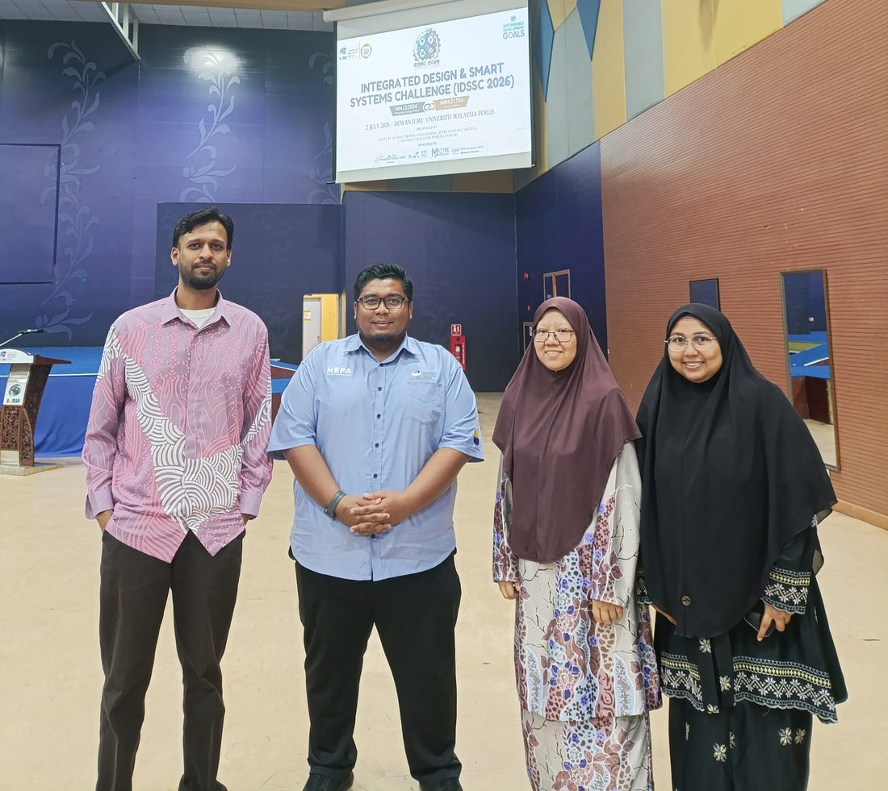
Ts. Dr. Mohd. Zamri bin Zahir Ahmad (Ketua) Ts. Dr. Ahmad Ashraf bin Abdul Halim Ts. Dr. 'Aini Syuhada binti Md Zain Dr. Nurol Husna binti Che Rose
Fakulti Kejuruteraan & Teknologi Elektronik, Universiti Malaysia Perlis
MasalahKursus 100% penilaian berterusan untuk 182 pelajar diurus secara manual: kumpulan, logbook Word, borang kertas dan kalkulator. Proses hanya dilihat 4 kali satu semester.
InovasiDPMS: ekosistem digital 3 komponen (alat pengumpulan, portal DPMS, eScoring) yang membolehkan pentaksiran autentik berbilang sumber setiap minggu, dijajarkan kepada 7 CO.
BuktiCO6 naik 82.7% → 92.4%, CO4 85.3% → 91.6%. 590/592 logbook disahkan dengan maklum balas. Rakan sebaya mengesan 9 pelajar kurang menyumbang.
Nilai43 projek menyelesaikan masalah sebenar industri & komuniti. Pingat Emas EDIC 2026. Kos lesen RM0 di atas Google Workspace UniMAP.
AIPDP UniMAP 2026 · Pentaksiran Alternatif2
Pasukan inovasi
Empat penyelaras, tiga program, satu inovasi
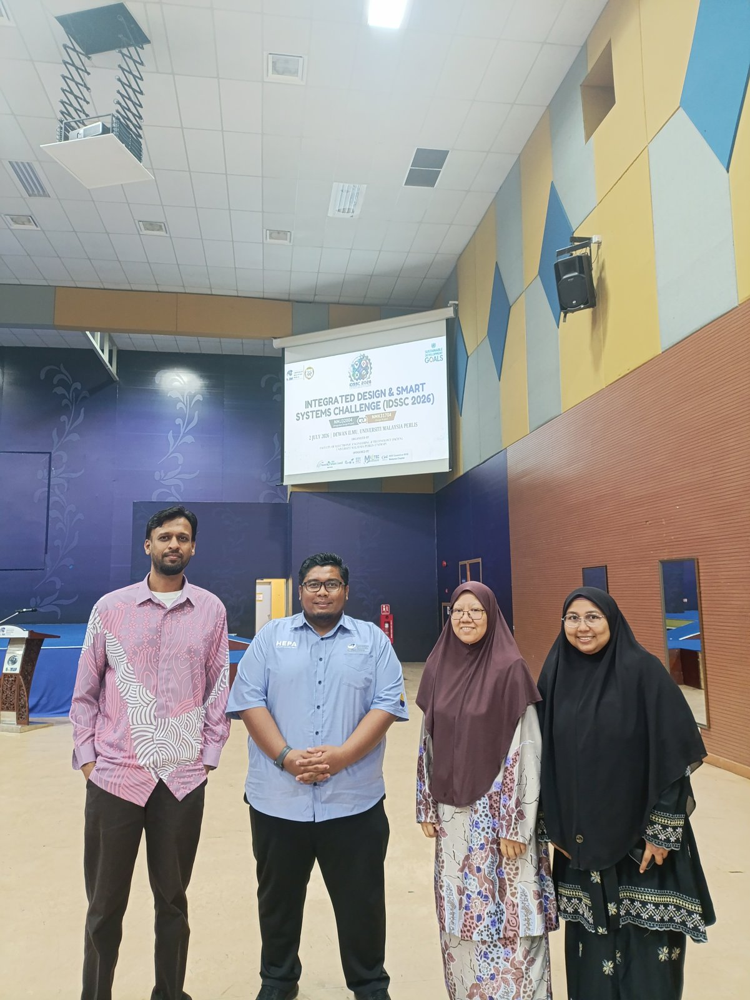
Dari kiri: Ts. Dr. Mohd. Zamri, Ts. Dr. Ahmad Ashraf, Ts. Dr. 'Aini Syuhada dan Dr. Nurol Husna di IDSSC 2026, 2 Julai 2026.
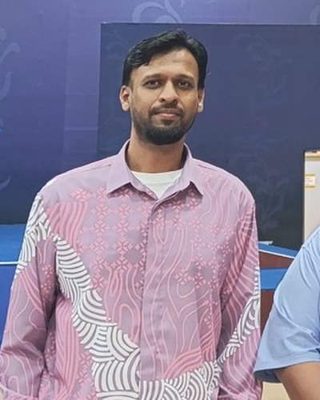
Ts. Dr. Mohd. Zamri bin Zahir AhmadKetua kumpulanPenyelaras UR6523007 Sistem Elektronik · reka bentuk pentaksiran & pembangun DPMS
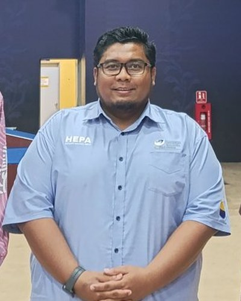
Ts. Dr. Ahmad Ashraf bin Abdul HalimAhliPenyelaras UR6523008 Reka Bentuk Telekomunikasi Elektronik
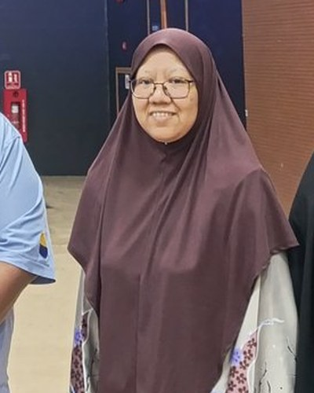
Ts. Dr. 'Aini Syuhada binti Md ZainAhliPenyelaras UR6523009 Reka Bentuk Rangkaian Elektronik
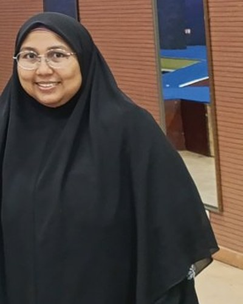
Dr. Nurol Husna binti Che RoseAhliPenyelaras UR6523009 Reka Bentuk Rangkaian Elektronik
AIPDP UniMAP 2026 · Pentaksiran Alternatif3
Pasukan inovasi
Penyelaras di lapangan, IDSSC 2026
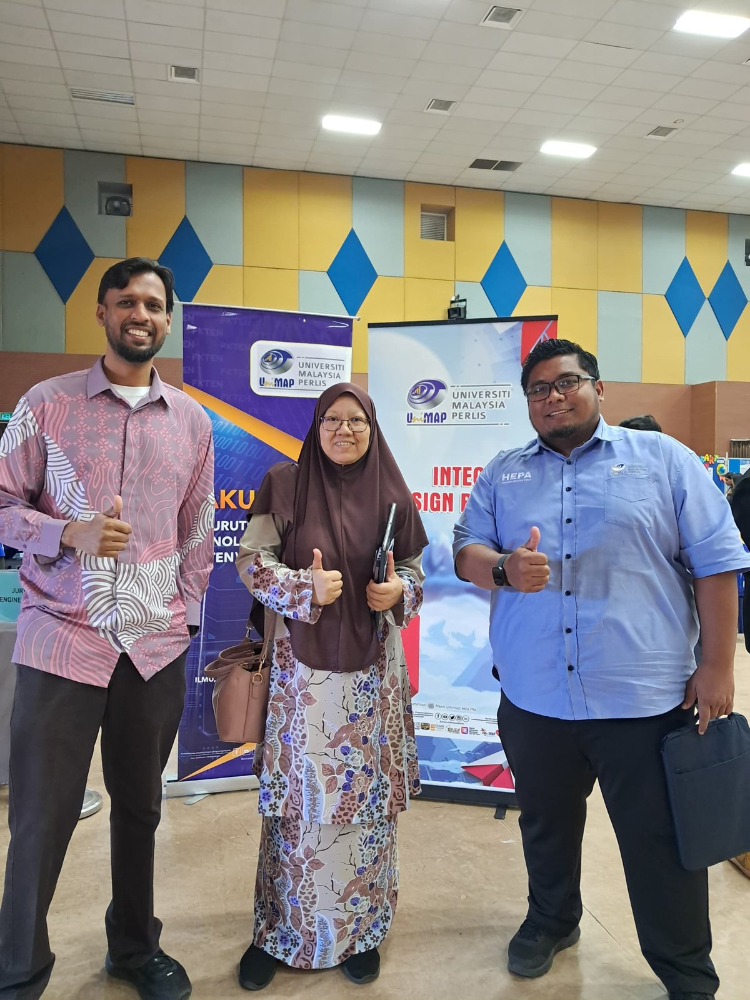
Dari kiri: Ts. Dr. Mohd. Zamri, Ts. Dr. 'Aini Syuhada dan Ts. Dr. Ahmad Ashraf di pintu masuk IDSSC 2026.
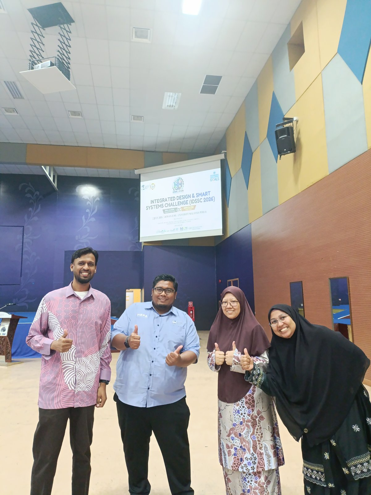
Dari kiri: Ts. Dr. Mohd. Zamri, Ts. Dr. Ahmad Ashraf, Ts. Dr. 'Aini Syuhada dan Dr. Nurol Husna.
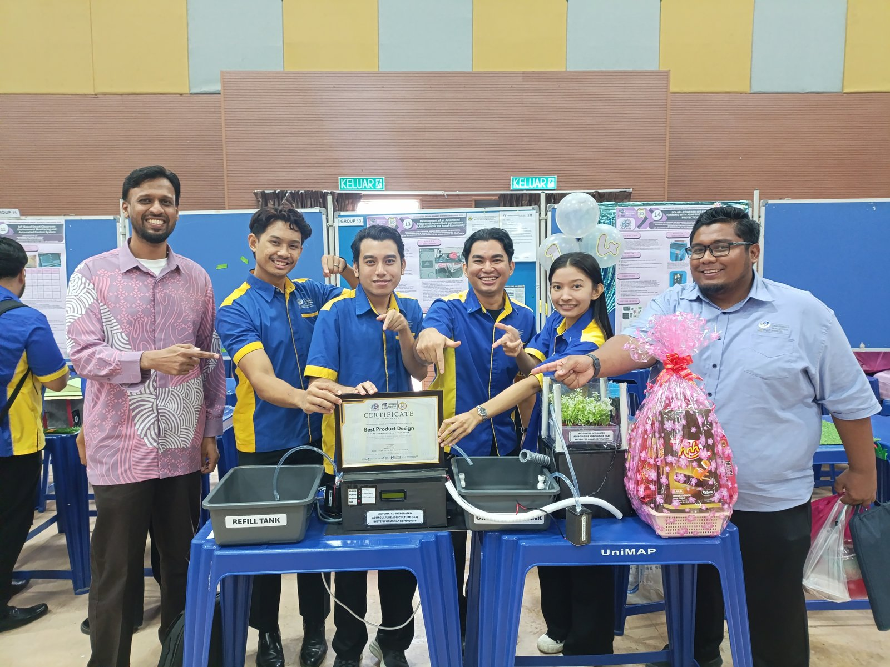
Ts. Dr. Mohd. Zamri (kiri) dan Ts. Dr. Ahmad Ashraf (kanan) bersama Kumpulan 13, pemenang Reka Bentuk Produk Terbaik.
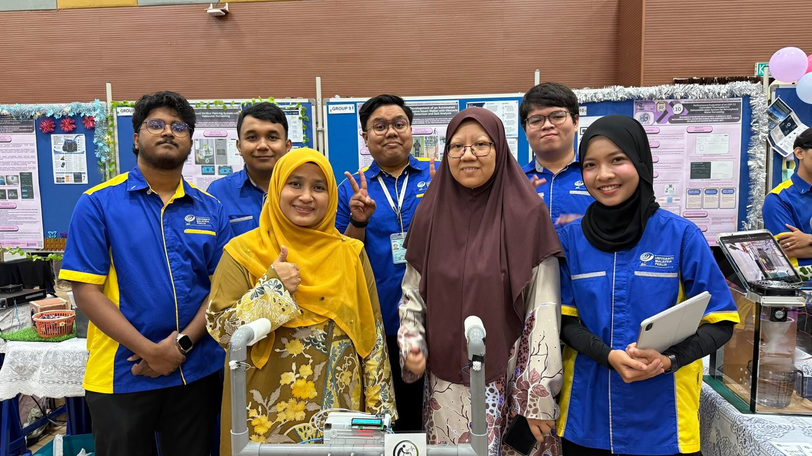
Ts. Dr. 'Aini Syuhada (tengah, tudung coklat) bersama kumpulan pelajar di gerai.
Peranan setiap penyelaras
Setiap penyelaras mengetuai pelajar satu program, menyelia kumpulan, menjadi panel penilai pada hari IDSSC dan memantau kemajuan mingguan 43 kumpulan melalui DPMS. Pasukan yang sama mereka bentuk pentaksiran, membangunkan sistem dan melaksanakannya untuk 182 pelajar.
AIPDP UniMAP 2026 · Pentaksiran Alternatif4
Pasukan inovasi
Bersama pengurusan fakulti & pemenang
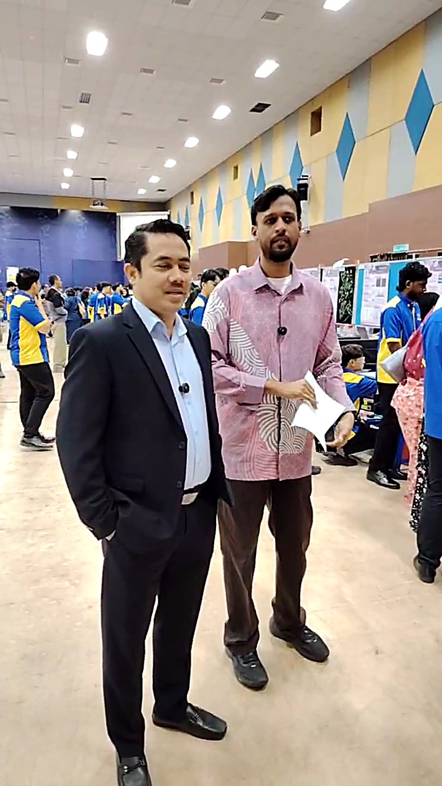
Bersama Dekan FKTEN ketika itu, Prof. Madya Ir. Dr. Razaidi bin Hussin, di IDSSC 2026.
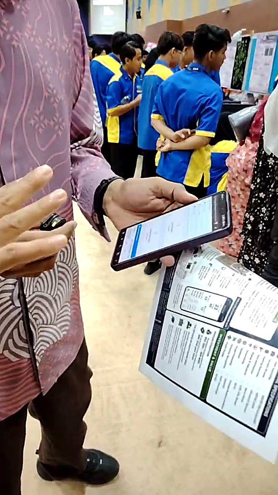
Demonstrasi langsung pada telefon bersama risalah.
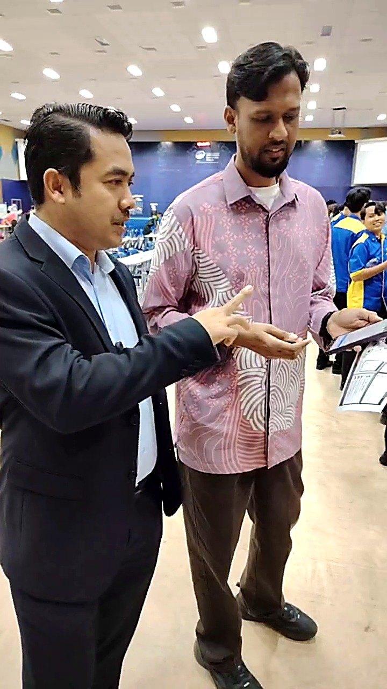
Menerangkan DPMS dan pendekatan pentaksiran kepada Dekan FKTEN.
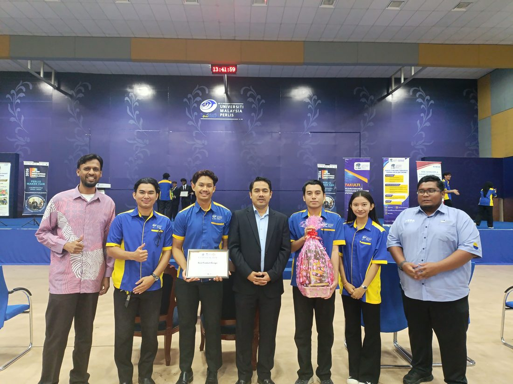
Penyelaras bersama kumpulan pemenang di pentas.
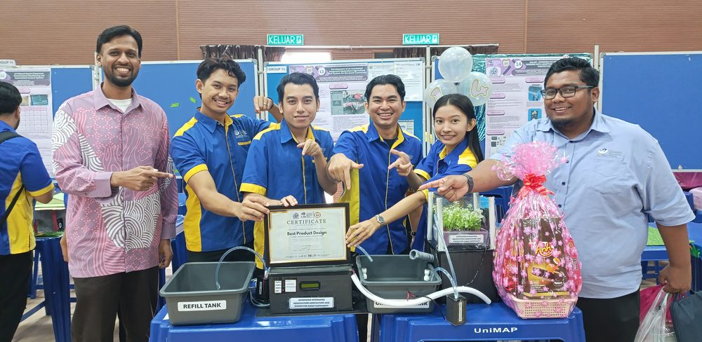
Meraikan kumpulan pemenang di gerai mereka.
Pengurusan fakulti melihat sendiri
Pada hari pentaksiran IDSSC 2026, Dekan FKTEN meninjau gerai pelajar, melihat demonstrasi DPMS pada telefon dan bertemu kumpulan pemenang bersama penyelaras.
AIPDP UniMAP 2026 · Pentaksiran Alternatif5
A–B
Maklumat institusi & ahli kumpulan
A. Maklumat institusi
Nama institusi
Universiti Malaysia Perlis (UniMAP)
Alamat institusi
Fakulti Kejuruteraan & Teknologi Elektronik (FKTEN), Kampus Pauh Putra, 02600 Arau, Perlis
Ketua kumpulan
Ts. Dr. Mohd. Zamri bin Zahir Ahmad
No. Kad Pengenalan
dalam versi PDF
Alamat pejabat
FKTEN, Kampus Pauh Putra, 02600 Arau, Perlis
No. telefon pejabat
04-988 5509 / 5515 (FKTEN)
No. telefon bimbit
dalam versi PDF
E-mel rasmi
zamrizahir@unimap.edu.my
B. Ahli kumpulan
Nama
Peranan
E-mel
Ts. Dr. Ahmad Ashraf bin Abdul Halim
Penyelaras UR6523008
ashrafhalim@unimap.edu.my
Ts. Dr. 'Aini Syuhada binti Md Zain
Penyelaras UR6523009
ainisyuhada@unimap.edu.my
Dr. Nurol Husna binti Che Rose
Penyelaras UR6523009
husnarose@unimap.edu.my
Profil kursus
NMK31704Design Project · 4 kredit · tahun akhir
100%penilaian berterusan, tiada peperiksaan akhir
3program Sarjana Muda Teknologi Kejuruteraan Elektronik
182pelajar · 43 kumpulan (Sem 2 2025/2026)
76pensyarah sebagai penyelia & panel
7CO dipetakan kepada 7 PO (PO3, PO6–PO10, PO12)
AIPDP UniMAP 2026 · Pentaksiran Alternatif6
C · Sinopsis
Apa itu DPMS?
DPMS (Design Project Management System) ialah ekosistem digital yang dibangunkan oleh pasukan penyelaras untuk mengurus dan menaksir kursus NMK31704 Projek Rekabentuk, dari pembentukan kumpulan hingga markah akhir pelajar.
Mengapa dibina182 pelajar, 3 program, 43 kumpulan dan 76 penilai tidak lagi boleh diurus dengan fail Word, emel dan kertas.
Apa yang berubahSetiap peringkat kursus kini berlaku dalam satu aliran digital, dengan bukti mingguan untuk setiap kumpulan.
Apa yang dibolehkanPentaksiran autentik berbilang sumber yang dijajarkan kepada 7 hasil pembelajaran kursus, yang rumit dan memakan masa jika dilaksanakan secara manual untuk 182 pelajar.
NMK31704 Design Project×
+
–□×
←→⟳
sites.google.com/unimap.edu.my/dpfkten
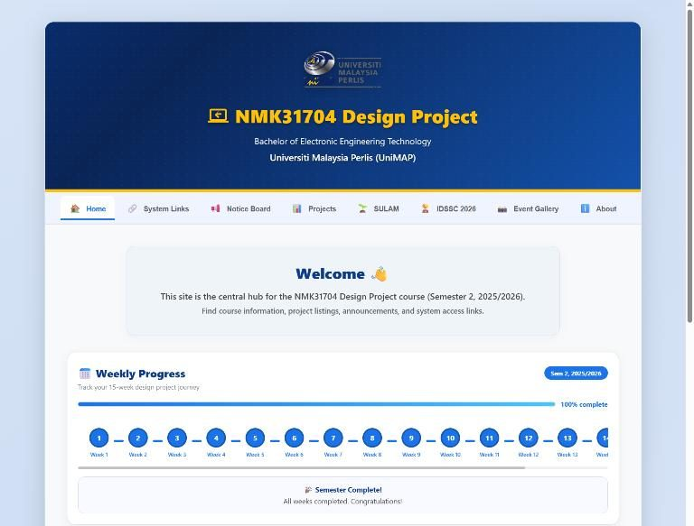
Portal kursus sebagai pintu masuk tunggal ke DPMS dan eScoring.
DPMS · Pelajar×
+
–□×
←→⟳
script.google.com · DPMS
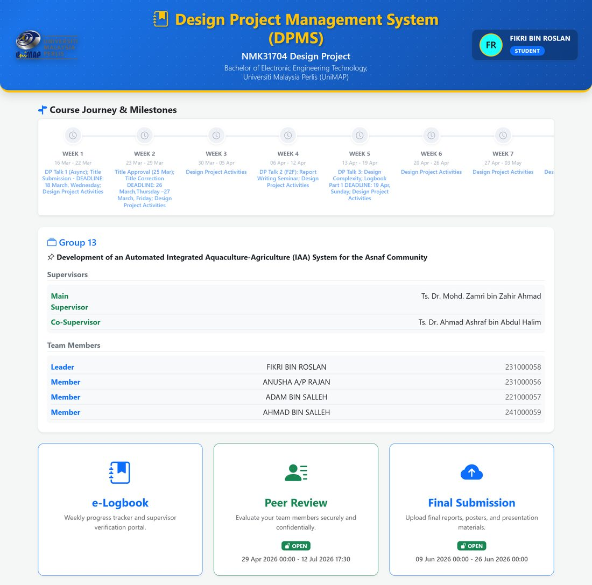
Hab pelajar: perjalanan kursus dan modul pentaksiran.
AIPDP UniMAP 2026 · Pentaksiran Alternatif7
C · Sinopsis
Ciri-ciri DPMS
Semua ciri di bawah dibangunkan oleh pasukan dan digunakan sepenuhnya pada Semester 2 2025/2026.
1 · Alat pengumpulan
Python (desktop) · penyelaras
Kumpulan seimbang mengikut CGPA, jantina, bangsa dan program
Kumpulan yang perlu disemak ditanda automatik
Agihan penyelia utama & penyelia bersama dari program berbeza
Agihan Panel 1 & Panel 2 tanpa pertindihan program
Papan KPI & matriks kerjasama antara program
Eksport senarai kumpulan & penilai ke DPMS dan eScoring
2 · Portal DPMS
Google Apps Script · pelajar, penyelia, penyelaras
Carta Gantt interaktif: rancangan dikunci selepas tarikh akhir perancangan
Status tugasan automatik: tepat masa, awal, lewat, terlepas
e-Logbook mingguan berstruktur: agenda, kemajuan, isu, rancangan
Gambar bukti dimuat naik terus ke Google Drive
Pengesahan penyelia: Sah atau Pinda, dengan komen bertulis
Notifikasi emel automatik kepada penyelia dan pelajar
Status 14 minggu: Disahkan, Menunggu, Pindaan, Terlepas
Penilaian rakan sebaya 7 kriteria secara sulit
Penghantaran akhir: laporan teknikal, poster, brosur dan video
Penilaian logbook oleh penyelaras (rubrik A1–A5)
Tetapan tarikh akhir & pemantauan 43 kumpulan × 14 minggu
Markah logbook & rakan sebaya dihantar terus ke eScoring
3 · eScoring
Google Apps Script · penyelia, panel, penyelaras
e-Rubrik laporan & pembentangan untuk penyelia, Panel 1 dan Panel 2
Deskriptor setiap tahap skor dipaparkan semasa menilai
Daftar masuk penilai di dewan & pemantau dewan secara langsung
Akses terus ke laporan, poster, brosur dan video kumpulan
Laman Google Sites kursus ialah pintu masuk tunggal. Pelajar, penyelia, panel dan penyelaras membuka DPMS dan eScoring dari sini, bersama notis, kemajuan mingguan, projek dan galeri.
NMK31704 Design Project×
+
–□×
←→⟳
sites.google.com/unimap.edu.my/dpfkten
Laman utama kursus: sites.google.com/unimap.edu.my/dpfkten
Sebelum DPMS: kursus diurus secara manual (2024/2025)
Kursus berbilang program dengan 180+ pelajar dan 100% penilaian berterusan diurus menggunakan hamparan, fail Word, emel dan kertas.
KumpulanDibentuk secara manualMengimbangi CGPA, jantina, bangsa dan program secara manual mengambil 2–3 hari bekerja setiap semester, dengan semakan berulang dan mudah tersilap.
LogbookWord → PDF, 4 kali satu semesterPelajar menulis, menukar, mendapatkan tandatangan dan memuat naik fail. Penyelia hanya nampak kemajuan pada 4 titik.
Rakan sebaya≈600 respons disusun manualPenilaian rakan sebaya melalui Google Form perlu disusun pelajar demi pelajar sebelum markah dapat dikira.
Penilaian akhirRubrik kertas & kalkulator≈170 fail dihantar melalui emel. Markah dikumpul manual dan CO-PO disediakan semula untuk akreditasi.
Beban pentadbiran yang tinggi menyebabkan pentaksiran tertumpu pada produk akhir, bukan proses pembelajaran.
AIPDP UniMAP 2026 · Pentaksiran Alternatif10
D. Rasional10%
Kesannya kepada kualiti pentaksiran
ProsesDilihat 4 kali sahajaMaklum balas tiba lewat kerana logbook hanya disemak pada titik penghantaran.
IndividuSumbangan tidak kelihatan80% markah ialah markah kumpulan. Ahli yang kurang menyumbang sukar dikesan tanpa bukti sistematik.
ProdukBergantung pada hasil akhirPenilaian tertumpu pada laporan dan pembentangan di hujung semester, bukan perjalanan reka bentuk 14 minggu.
KebolehpercayaanPenilai tidak selarasPerbezaan markah antara penyelia, Panel 1 dan Panel 2 tidak dikesan.
Pentaksiran berterusan yang sebenar memerlukan bukti pembelajaran setiap minggu, bukan empat kali satu semester.
AIPDP UniMAP 2026 · Pentaksiran Alternatif11
D. Rasional10%
Objektif inovasi
Membangunkan DPMS, ekosistem digital yang mengurus kursus dari pembentukan kumpulan hingga markah akhir pelajar, menggantikan proses manual.
Menilai proses, bukan hanya produk. Logbook dan kemajuan Gantt setiap minggu, disahkan penyelia dengan maklum balas sebelum penilaian sumatif.
Menjadikan tugasan autentik dan sejajar. Projek menyelesaikan masalah sebenar, dan setiap komponen dipetakan kepada 7 CO.
Mengiktiraf sumbangan individu. 20% markah dinilai secara individu: pemerhatian penyelia, rakan sebaya 7 kriteria dan kualiti pembentangan.
Meningkatkan kesahan dan kebolehpercayaan. Tiga penilai, e-rubrik berdeskriptor yang sama, semakan percanggahan automatik.
DPMS · Penyelaras×
+
–□×
←→⟳
dpms.unimap · Deadlines
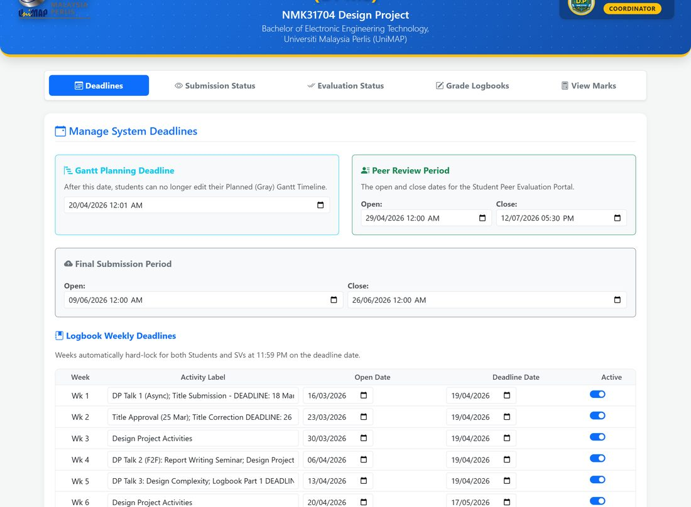
Kalendar pentaksiran ditetapkan sekali dalam DPMS: tarikh Gantt, rakan sebaya, penghantaran akhir dan setiap minggu logbook.
AIPDP UniMAP 2026 · Pentaksiran Alternatif12
E1 · Reka bentuk pentaksiran40%
Apa yang ditaksir dalam NMK31704
Kursus 4 kredit tahun akhir, 100% penilaian berterusan tanpa peperiksaan akhir. Lima komponen daripada tiga sumber bukti, dinilai oleh empat jenis penilai dan dijajarkan kepada 7 hasil pembelajaran kursus (CO).
Komponen
Penilai
CO
G / I
%
Logbook mingguan
Penyelaras (setiap entri disahkan penyelia)
CO6
G
10
Pemerhatian penyelia
Penyelia: pengurusan projek & kerja individu
CO4, CO6
G + I
20
Penilaian rakan sebaya
Rakan sekumpulan
CO4
I
5
Laporan teknikal
Penyelia, Panel 1, Panel 2
CO1–CO3, CO6
G
40
Pembentangan & prototaip
Panel 1, Panel 2
CO1–CO3, CO5, CO7
G + I
25
Peranan DPMS dalam pentaksiran
Setiap komponen di atas dikendalikan dalam DPMS: logbook dan Gantt dalam portal DPMS, penilaian rakan sebaya dalam talian, dan laporan serta pembentangan dinilai melalui e-rubrik eScoring. Markah dikumpul dan dipetakan ke CO-PO secara automatik.
Sumber: Pelan Pengajaran & Pembelajaran (TLP) NMK31704 Sem 2 2025/2026.
AIPDP UniMAP 2026 · Pentaksiran Alternatif13
E1 · Penjajaran konstruktif
Tujuh hasil pembelajaran, setiap satu dengan tugasan & bukti
Setiap hasil pembelajaran kursus (CO) mempunyai tahap domain, hasil pembelajaran program (PO) dan komponen pentaksiran yang khusus. Jumlah pemberat = 100%.
CO
Pernyataan hasil pembelajaran
Domain
PO
Ditaksir melalui (markah)
%
CO1
Mereka bentuk penyelesaian bagi masalah teknologi kejuruteraan yang ditakrif secara luas, dengan mengambil kira kesihatan awam, keselamatan, budaya, masyarakat dan kelestarian.
C6
PO3
Laporan 20 · Pembentangan 8
28
CO2
Mengutamakan pertimbangan masyarakat, kesihatan, keselamatan, undang-undang, budaya, alam sekitar dan kelestarian dalam penyelesaian kejuruteraan.
A4
PO6
Laporan 10 · Pembentangan 6
16
CO3
Menunjukkan komitmen terhadap tanggungjawab etika dan profesionalisme dalam pelaksanaan projek.
A5
PO7
Laporan 7 · Pembentangan 3
10
CO4
Berfungsi dengan berkesan sebagai individu, ahli atau ketua dalam pasukan teknikal yang pelbagai.
A5
PO8
Pemerhatian penyelia 10 · Rakan sebaya 5
15
CO5
Berkomunikasi dengan berkesan melalui penulisan, pembentangan dan tugasan kolaboratif.
A4
PO9
Kualiti pembentangan individu 5
5
CO6
Menilai aplikasi prinsip pengurusan projek dan kewangan dalam pelaksanaan projek.
C5
PO10
Logbook 10 · Penyelia 10 · Laporan 3
23
CO7
Mengaplikasi kemahiran keusahawanan untuk membangunkan penyelesaian berfokuskan pengguna dan mempromosi produk.
A4
PO12
Pembentangan (pemasaran produk) 3
3
Pemberat setiap CO dalam markah akhir (%) · kognitif afektif
7CO
7PO
3domain (kognitif C5–C6, afektif A4–A5)
20 / 80individu / kumpulan
Sumber: Pelan Pengajaran & Pembelajaran (TLP) NMK31704 Sem 2 2025/2026, Jadual B2 & D.
AIPDP UniMAP 2026 · Pentaksiran Alternatif14
E1 · Penjajaran konstruktif
Daripada hasil pembelajaran kepada bukti: contoh CO6
Penjajaran yang boleh dilihat
CO6 (menilai pengurusan projek) tidak ditaksir melalui satu bab laporan sahaja, tetapi melalui bukti proses setiap minggu: pelan Gantt, kemajuan sebenar dan pemerhatian penyelia.
Setiap kriteria e-rubrik membawa kod CO dan PO, jadi setiap markah terus menyumbang kepada analisis pencapaian CO.
eScoring · CO-PO Master Matrix×
+
–□×
←→⟳
script.google.com · eScoring
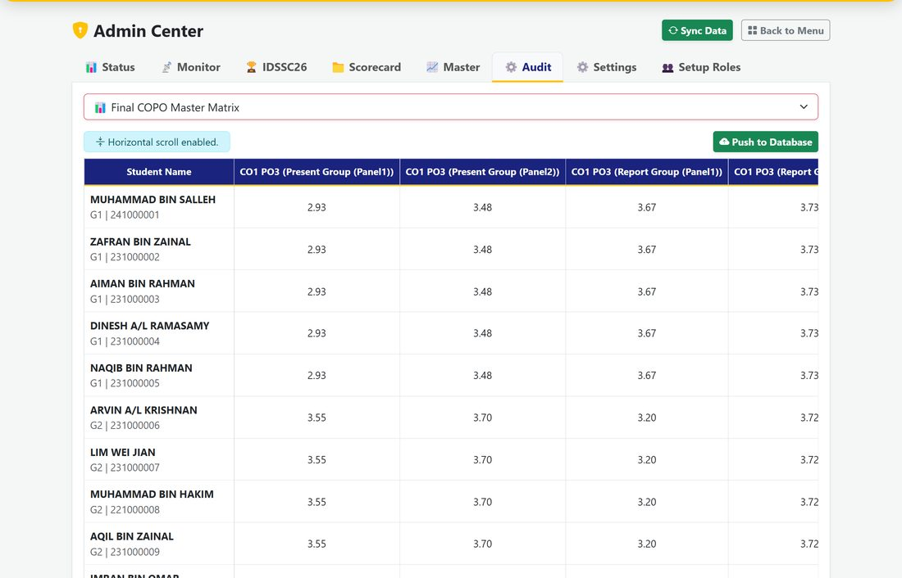
Matriks CO-PO setiap pelajar dijana terus daripada markah e-rubrik.
eScoring · Report Evaluation×
+
–□×
←→⟳
script.google.com · eScoring
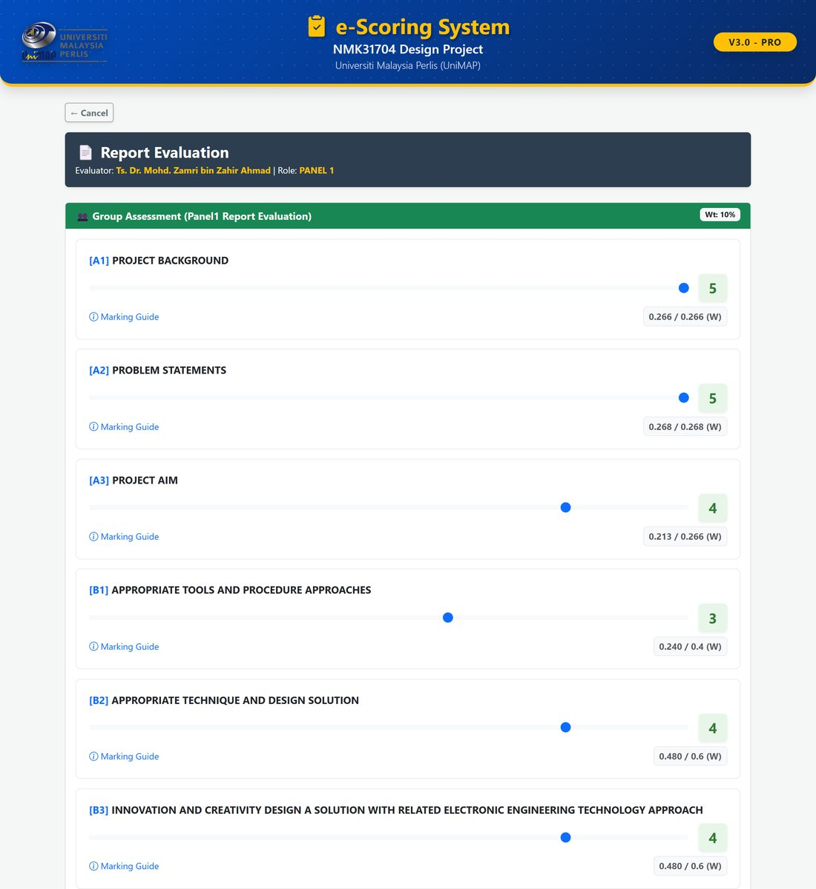
Setiap kriteria rubrik membawa pemberat dan pemetaan CO-PO, dengan panduan skor 0–5.
20kriteria rubrik laporan, setiap satu berkod CO-PO
182pelajar dengan matriks CO-PO dijana automatik
0pengiraan manual oleh penilai
AIPDP UniMAP 2026 · Pentaksiran Alternatif15
E1 · Reka bentuk pentaksiran
Rubrik berdeskriptor: setiap markah mempunyai maksud yang jelas
Semua rubrik kursus (laporan, pembentangan, pemerhatian penyelia, logbook, rakan sebaya) menggunakan skala 0–5 yang sama, dan setiap tahap mempunyai deskriptor bertulis. Penilai berbeza mentafsir markah dengan cara yang sama, dan pelajar tahu dari awal apa yang dijangka.
Contoh: kriteria D4 Pertimbangan SDGrubrik laporan · CO2 (PO6)
0No consideration
1SDG relevance is highly unclear or completely misaligned with project goals.
2SDG relevance is weak, with limited or unclear connections to any specific goals.
3SDG relevance is somewhat identified, but not well integrated into the project.
4SDG relevance is clear, with appropriate connections to specific SDGs.
5SDG relevance is strongly justified, directly contributing to specific SDGs with measurable impact.
Pemberat 20 kriteria rubrik laporan mengikut CO (e-rubrik yang sama untuk penyelia, Panel 1 dan Panel 2)
eScoring · Presentation Evaluation×
+
–□×
←→⟳
script.google.com · eScoring
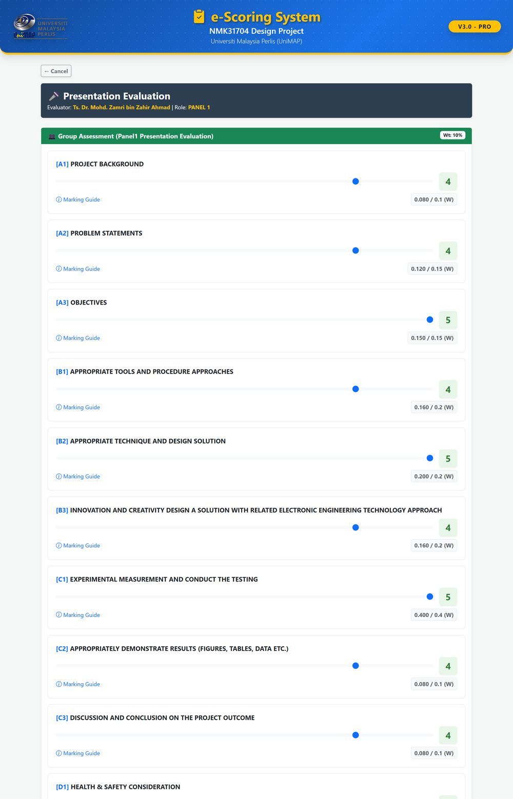
Dalam eScoring, deskriptor setiap tahap dipaparkan kepada penilai semasa memberi skor; markah = skor × pemberat dikira automatik.
Sumber: Garis Panduan NMK31704, Lampiran G (rubrik laporan).
AIPDP UniMAP 2026 · Pentaksiran Alternatif16
E1 · Reka bentuk pentaksiran
Tiga peranan pentaksiran dalam NMK31704
Setiap komponen mempunyai peranan yang jelas: membantu pelajar belajar, melibatkan pelajar dalam menilai, atau menilai hasil akhir.
FormatifMembantu pelajar menambah baik setiap minggu, sebelum markah akhir: logbook dan pemerhatian penyelia.
Kendiri & rakan sebayaPelajar menjejak kemajuan sendiri melalui carta Gantt dan menilai sumbangan rakan sepasukan.
SumatifProduk akhir (laporan dan prototaip) dinilai oleh tiga penilai dengan e-rubrik yang sama.
Komponen
%
Peranan
Bila
Bukti
Disokong oleh
Logbook mingguan
10%
Formatif
Setiap minggu
592 entri, 1,200 gambar, komen penyelia
e-Logbook + pengesahan
Pemerhatian penyelia
20%
Formatif
Berterusan
Pengurusan projek (kumpulan) & kerja individu
e-Rubrik penyelia
Carta Gantt
dalam CO6
Kendiri
Setiap minggu
596 tugasan: rancangan lawan sebenar
Gantt interaktif DPMS
Rakan sebaya
5%
Rakan sebaya
Minggu 14
596 penilaian, 7 kriteria
Penilaian rakan sebaya DPMS
Laporan teknikal
40%
Sumatif
Minggu 13
43 laporan, 3 penilai
Penghantaran akhir + e-Rubrik
Pembentangan & prototaip
25%
Sumatif
Minggu 14
43 prototaip, 2 panel + markah individu
eScoring di gerai
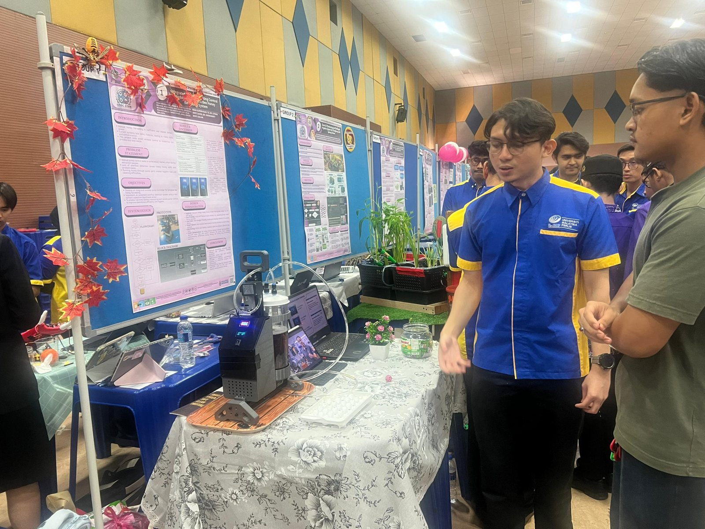
Pentaksiran sumatif: kumpulan menerangkan reka bentuk dan menjawab soalan penilai.
AIPDP UniMAP 2026 · Pentaksiran Alternatif17
E1 · Reka bentuk pentaksiran
Mengapa ini pentaksiran alternatif
Daripada satu penilaian produk di hujung semester kepada penilaian autentik berbilang sumber sepanjang 14 minggu.
Aspek
Pentaksiran konvensional
Pentaksiran DPMS
Apa yang dinilai
Produk akhir (laporan, pembentangan)
Proses mingguan + rakan sebaya + produk
Bila
Hujung semester, 4 semakan logbook
Setiap minggu (formatif) + minggu 13–14 (sumatif)
Siapa menilai
Penyelia & panel secara berasingan
Penyelia, Panel 1, Panel 2 dan rakan sebaya
Tugasan
Tajuk umum
Masalah sebenar industri / komuniti / SULAM
Individu
Markah kumpulan dominan
20% individu, dibezakan dalam kumpulan
Maklum balas
Lewat, pada titik semakan
Setiap minggu, median 2.1 hari
Rubrik
Kertas, pengiraan manual
e-Rubrik 0–5 berdeskriptor, sama untuk semua penilai
CO-PO
Disediakan semula selepas semester
Dijana terus daripada markah setiap pelajar
AutentikPelajar bekerja seperti jurutera: merancang, mendokumen, menguji dan membentang kepada penilai.
BerterusanBukti dikumpul dan dinilai setiap minggu, bukan pada satu titik.
Berbilang sumberPenyelia, dua panel dan rakan sebaya memberi pandangan berbeza tentang pelajar yang sama.
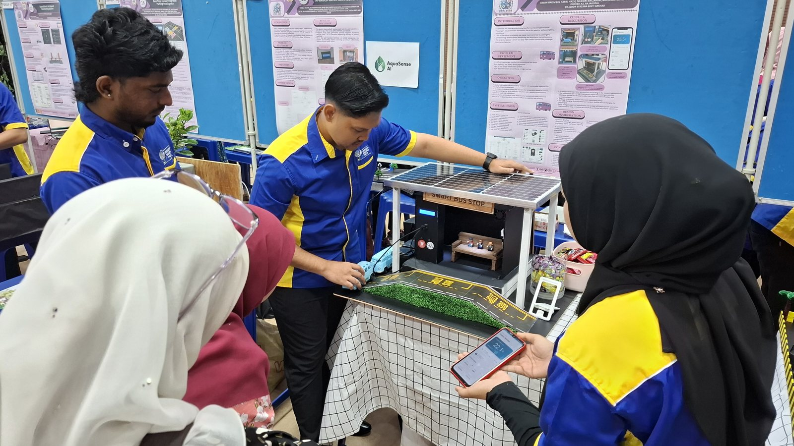
Pelajar mendemonstrasi prototaip pertanian pintar berserta aplikasi telefon kepada pelawat di IDSSC 2026.
AIPDP UniMAP 2026 · Pentaksiran Alternatif18
E2 · Tugasan autentik
8 tema projek: pelajar memilih masalah sebenar
Garis panduan kursus menetapkan 8 tema. Setiap kumpulan memilih satu tema, lalu mengenal pasti masalah sebenar yang dihadapi industri, komuniti atau sektor.
PertanianPertanian pintar, akuakultur, pemantauan tanaman & penuaian13 kumpulan
Komputer / IoTSistem bersambung, pemantauan & kawalan jarak jauh13 kumpulan
Bandar pintarPengangkutan, keselamatan awam & infrastruktur6 kumpulan
Teknologi hijauTenaga boleh baharu, sisa & kecekapan tenaga5 kumpulan
PerubatanKesihatan, pemantauan pesakit & keselamatan klinikal4 kumpulan
KetenteraanKeselamatan & pertahanan1 kumpulan
PendidikanTeknologi bilik darjah & pembelajaran1 kumpulan
PembuatanAutomasi & kawalan kualiti industri0 kumpulan
Dari tema kepada tajuk yang diluluskan
1
Pilih tema & kenal pasti masalah sebenar.
2
Rundingan wajib dengan penyelia.
3
Cadangan: masalah, objektif, seni bina, pertimbangan.
4
Semakan oleh jawatankuasa penyelaras.
5
Tajuk diluluskan atau dipinda.
Syarat keautentikan
Setiap projek mesti menyelesaikan masalah sebenar, mengintegrasikan perkakasan dan perisian, memenuhi satu tahap kerumitan teknikal dan menghasilkan prototaip yang berfungsi. Projek perisian sahaja tidak diterima.
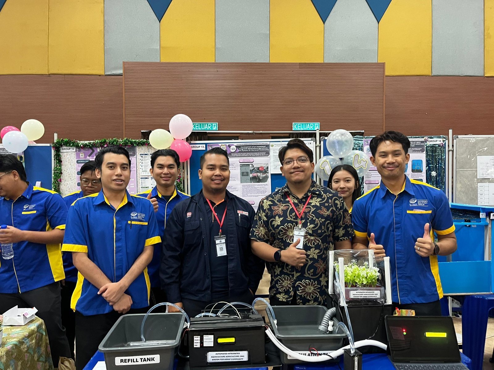
Kumpulan bersama prototaip mereka di IDSSC 2026.
Sumber: Garis Panduan NMK31704 (3.2–3.12); borang semakan tajuk Sem 2 2025/2026 (43 cadangan).
AIPDP UniMAP 2026 · Pentaksiran Alternatif19
E2 · Tugasan autentik
Masalah sebenar, pertimbangan sebenar
Garis panduan kursus mewajibkan masalah sebenar industri, komuniti atau sektor, integrasi perkakasan-perisian dan prototaip yang berfungsi. Projek perisian sahaja tidak diterima.
Kolaborasi luar
MARDI Perlis: pengisihan kualiti mangga dengan AI.
MAIPs · ATAM · Thursinar Corp.: sistem akuakultur-pertanian untuk komuniti asnaf.
AR Agro Farm Enterprise: pengairan pintar kangkung.
Organisasi komuniti Perlis: sistem audio IoT.
43projek dengan prototaip perkakasan + perisian
4projek bersama rakan luar (MARDI, MAIPs, industri, komuniti)
26kumpulan memilih menyertai SULAM
Pertimbangan reka bentuk wajib dalam cadangan (CO2)
Dinilai dalam
Manfaat budaya & masyarakat
Laporan & pembentangan, bahagian D
Kelestarian alam sekitar
Laporan & pembentangan, bahagian D
Kesihatan & keselamatan
Laporan & pembentangan, bahagian D
Penjajaran SDG (paling kerap: SDG 9, 11, 12, 7)
Kriteria D4 rubrik laporan & pembentangan
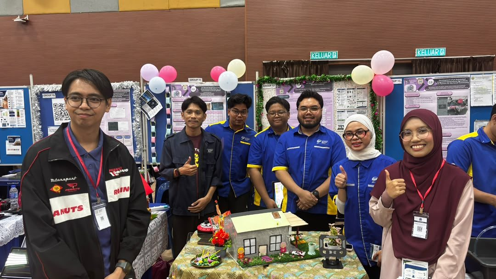
Kumpulan bersama poster dan prototaip mereka di IDSSC 2026.
Sumber: Garis Panduan NMK31704 (3.6–3.11); borang semakan tajuk Sem 2 2025/2026 (43 cadangan).
AIPDP UniMAP 2026 · Pentaksiran Alternatif20
E2 · Tugasan autentik
Contoh projek mengikut tema
PertanianKawalan cerdas penuaian madu kelulut untuk penternak tempatan
PertanianPengisihan kualiti mangga dengan penglihatan AIKolaborasi: MARDI Perlis
PertanianPengairan pintar solar untuk tanaman kangkungKolaborasi: AR Agro Farm Enterprise
PerubatanPengasingan & keselamatan sisa klinikal untuk klinik pergigian
Bandar pintarRuang menunggu mesra OKU untuk penumpang stesen kereta api
PerubatanKerusi roda kawalan joystick dengan ciri keselamatan pesakit
Bandar pintarPengesanan banjir IoT dengan pembersih longkang automatik
PendidikanSistem kehadiran & penggantian guru berasaskan IoT
Teknologi hijauTong sampah pintar berkuasa solar dengan pengasingan sisa automatik
Kumpulan 13: sistem akuakultur-pertanian untuk komuniti asnaf (kolaborasi MAIPs), Reka Bentuk Produk Terbaik.Demonstrasi aplikasi pemantauan kepada pelawat.
Mengapa ini autentik
Pelajar melalui kitaran kerja jurutera sebenar: mengenal pasti masalah pengguna, mencadang dan mempertahankan tajuk kepada jawatankuasa, merancang jadual dan bajet, membina dan menguji prototaip, dan membentang kepada panel serta pelawat. Tugasan pentaksiran ialah kerja itu sendiri, bukan latihan berasingan.
AIPDP UniMAP 2026 · Pentaksiran Alternatif21
E3 · Pelaksanaan pentaksiran
14 minggu bersama DPMS: formatif setiap minggu, sumatif di hujung
Irama mingguan
Logbook dihantar setiap minggu dalam DPMS. Tetingkap penghantaran ditutup setiap beberapa minggu (minggu 5, 9, 12 dan 14) untuk penilaian penyelaras, manakala penyelia mengesahkan dan mengulas setiap entri mingguan. Empat siri DP Talk diselaraskan dengan peringkat projek.
Minggu
Pentaksiran
Dalam DPMS
1–2
Cadangan & semakan tajuk
Kumpulan & penyelia sudah ditetapkan
1–5
Rancangan carta Gantt (dikunci selepas minggu 5)
Editor Gantt, tarikh akhir perancangan
1–14
Logbook mingguan + pengesahan penyelia
e-Logbook, Sah / Pinda, notifikasi emel
5, 9, 12, 14
Tetingkap logbook ditutup & dinilai
Rubrik logbook A1–A5
13
Laporan, poster, brosur & video
Penghantaran akhir
14
Pembentangan & penilaian rakan sebaya
eScoring & borang rakan sebaya
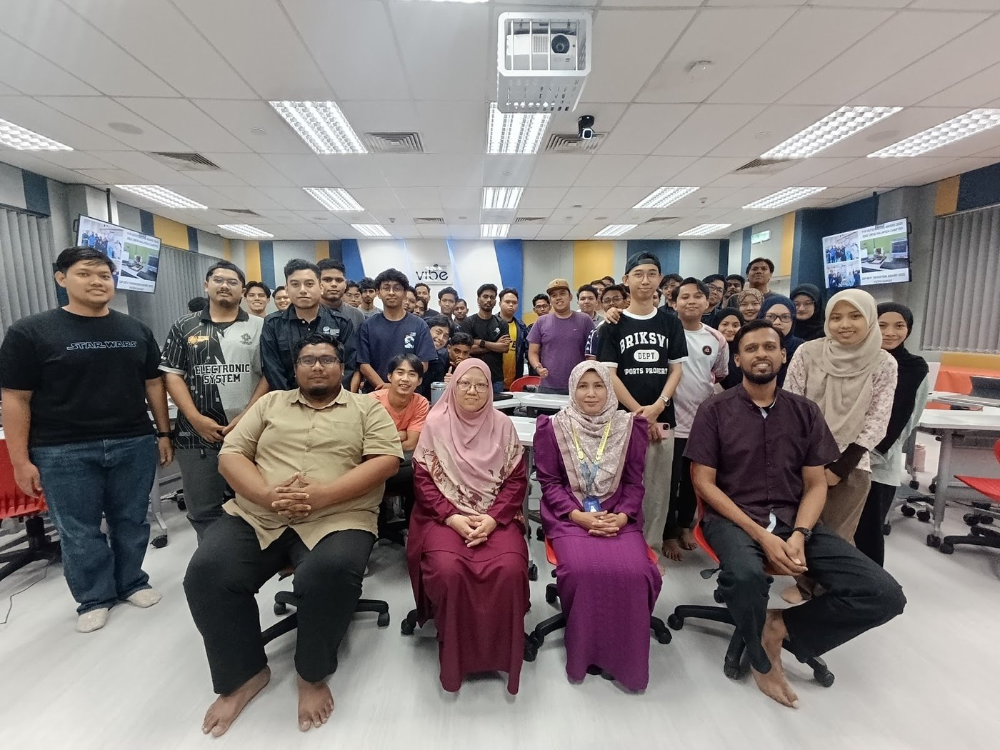
DP Talk 3: Kerumitan Reka Bentuk (minggu 5), bersama penyelaras dan pelajar.
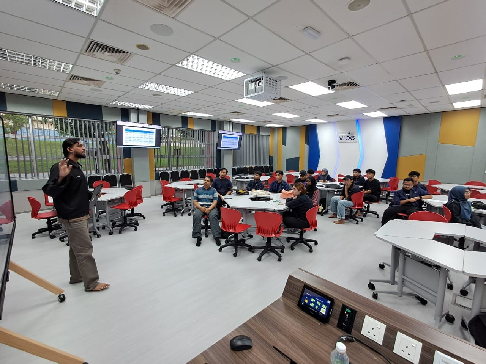
DP Talk 4: Seminar Pembentangan (minggu 11).
AIPDP UniMAP 2026 · Pentaksiran Alternatif22
E3 · Pelaksanaan pentaksiran
Bagaimana DPMS mengubah cara kursus diurus
Setiap peringkat semester dipindahkan daripada proses manual kepada satu aliran digital, dan setiap peringkat kini menghasilkan bukti pentaksiran.
Peringkat
Sebelum (manual)
Dengan DPMS
Pembentukan kumpulan
Hamparan & semakan manual, 2–3 hari
Alat pengumpulan, beberapa minit
Agihan penyelia & panel
Manual, semakan berulang
Automatik, tiada pertindihan program
Perancangan projek
Carta Gantt statik dalam laporan
Gantt DPMS dikemas kini setiap minggu
Kemajuan mingguan
Logbook Word, ditandatangan, 4 kali
e-Logbook setiap minggu, disahkan penyelia
Penilaian rakan sebaya
Google Form, ≈600 respons disusun manual
Dalam DPMS, markah dikira automatik
Penghantaran akhir
≈170 fail melalui emel
Satu halaman penghantaran, papan status
Penilaian akhir
Rubrik kertas & kalkulator
e-Rubrik di gerai, borang dikunci
Analisis CO-PO
Disediakan semula selepas semester
Dijana automatik untuk setiap pelajar
Sumber: Bilangan daripada Semester 2 2025/2026. Anggaran masa ialah anggaran penyelaras.
AIPDP UniMAP 2026 · Pentaksiran Alternatif23
E3 · Sebelum minggu 1
Pasukan pelbagai yang seimbang: asas pentaksiran kumpulan yang adil
CO4 menilai keupayaan berfungsi dalam "pasukan teknikal yang pelbagai". 80% markah ialah markah kumpulan, jadi komposisi kumpulan mesti adil sejak hari pertama.
Kaedah pentaksiran
Kumpulan pelbagai yang seimbang supaya 80% markah kumpulan adil, dan CO4 dinilai dalam pasukan teknikal yang pelbagai.
Bagaimana DPMS membantu
Alat pengumpulan mengimbangi CGPA, jantina, bangsa dan program dalam beberapa minit, dan menanda kumpulan yang perlu disemak.
0.08sisihan piawai purata CGPA antara kumpulan (berbanding 0.43 untuk individu)
3.03–3.37julat purata CGPA kumpulan, walaupun CGPA pelajar 2.09–3.91
43/43kumpulan mengandungi pelajar daripada ketiga-tiga program
NMK31704 Automated Management System×
+
–□×
←→⟳
C:\NMK31704\NMK31704_Systemv7.py
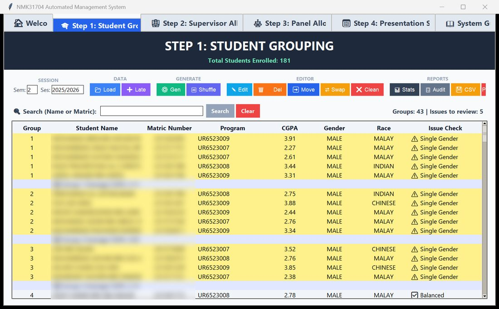
Alat pengumpulan mengimbangi CGPA, jantina, bangsa dan program, lalu menanda kumpulan yang perlu disemak (nama pelajar dikaburkan).
Dahulu penyelaras berjaya mengimbangi kumpulan secara manual, tetapi ia mengambil masa 2–3 hari bekerja dan mudah tersilap. Kini peraturan yang sama dijalankan dalam beberapa minit.
AIPDP UniMAP 2026 · Pentaksiran Alternatif24
E3 · Sebelum minggu 1
Penilai dari program berbeza untuk mengurangkan bias
Kaedah pentaksiran
Setiap kumpulan dinilai oleh penilai daripada program yang berbeza, supaya markah tidak bergantung pada pandangan seorang pensyarah.
Bagaimana DPMS membantu
Penyelia, penyelia bersama, Panel 1 dan Panel 2 diagih secara automatik tanpa pertindihan program, dengan beban yang seimbang.
Step 2 · Supervisor Allocation×
+
–□×
←→⟳
C:\NMK31704\NMK31704_Systemv7.py
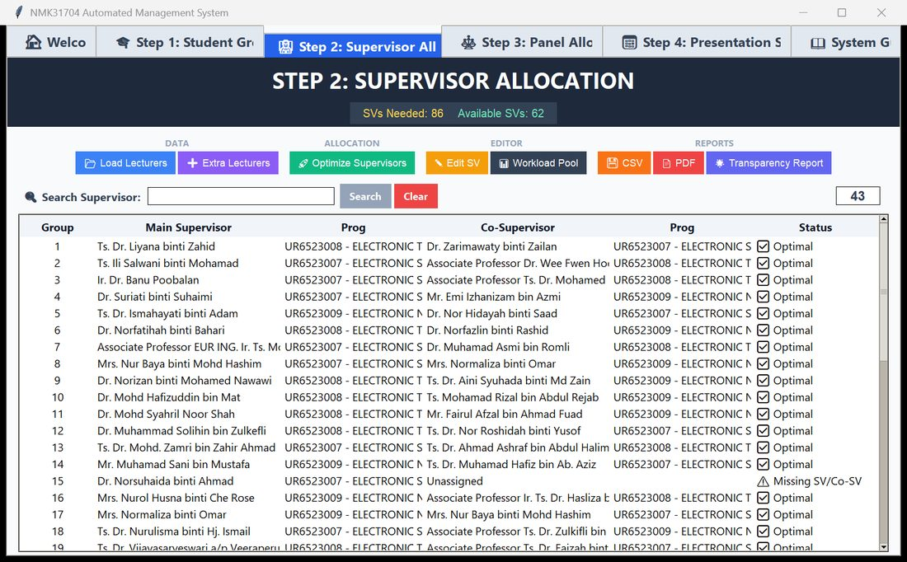
Penyelia utama dan penyelia bersama diagih dari program berbeza, dengan status "Optimal".
Collaboration Matrix×
+
–□×
←→⟳
KPI Dashboard
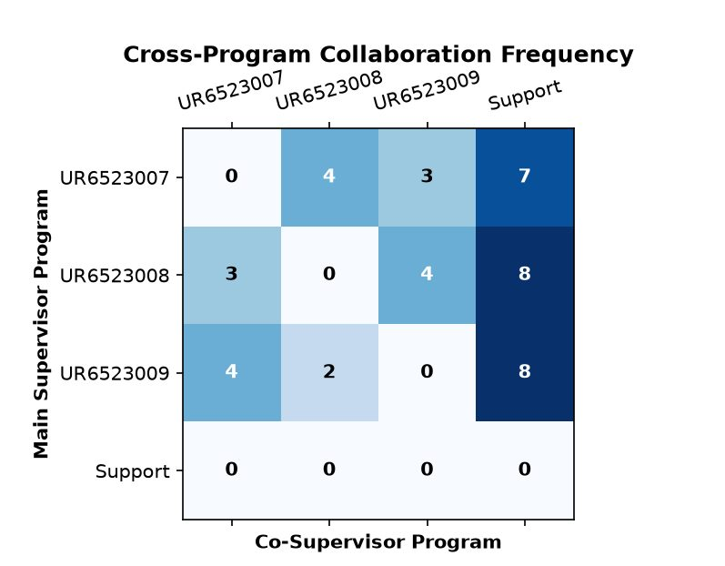
Pepenjuru = 0: tiada penyelia utama dan bersama dari program yang sama.
Beban & pandangan seimbang
141 peranan
502 peranan
123 peranan
76 pensyarah menjadi penyelia, penyelia bersama, Panel 1 atau Panel 2. Tiada sesiapa memegang lebih daripada 3 peranan. 30 kumpulan dinilai oleh pasangan panel teras program dan 13 oleh pasangan campuran.
Setiap kumpulan dinilai oleh penilai dengan latar program berbeza, jadi markah tidak bergantung pada pandangan seorang pensyarah sahaja.
Sumber: projek tersimpan alat pengumpulan, Jun 2026.
AIPDP UniMAP 2026 · Pentaksiran Alternatif25
E3 · Minggu 1–14
Carta Gantt interaktif: rancangan tetap, kemajuan dinilai setiap minggu
Kaedah pentaksiran
Pelajar merancang tugasan dan minggu pelaksanaan dalam minggu 1–5. Setiap minggu, kemajuan sebenar dinilai berbanding rancangan asal itu sebagai bukti CO6 (menilai pengurusan projek).
Bagaimana DPMS membantu
Selepas tarikh akhir perancangan (akhir minggu 5), garis masa rancangan (kelabu) dikunci. Setiap logbook mingguan menanda kemajuan, dan carta memaparkan status setiap tugasan secara automatik.
DPMS · Project Gantt Chart×
+
–□×
←→⟳
script.google.com · DPMS
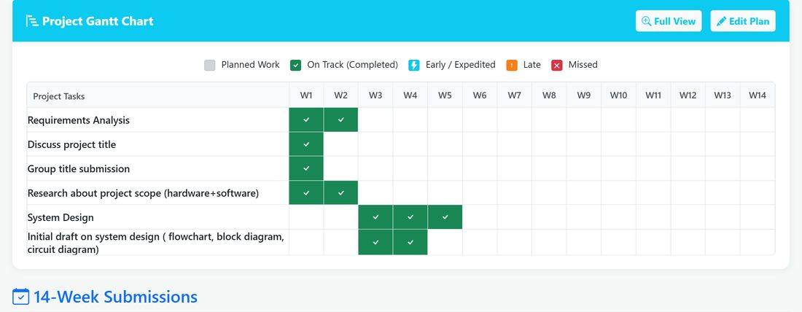
Carta Gantt interaktif: rancangan (kelabu) dan status sebenar setiap tugasan mengikut minggu.
558Tepat masadibuat dalam minggu yang dirancang (93.6%)
27Awalsiap lebih awal daripada rancangan (4.5%)
4Lewatdibuat selepas minggu yang dirancang
7Terlepastidak ditanda dalam mana-mana logbook
Mengapa ini penting untuk pentaksiran
Sebelum DPMS, carta Gantt dilukis dalam laporan dan boleh dilaraskan semula sepanjang semester supaya kelihatan selari dengan kemajuan. Kini rancangan asal kekal, jadi penyelia dan penyelaras menilai pengurusan projek sebenar setiap kumpulan.
596 tugasan dirancang oleh 43 kumpulan (purata 13.9).
Edit Gantt Chart Plan×
+
–□×
←→⟳
script.google.com · DPMS
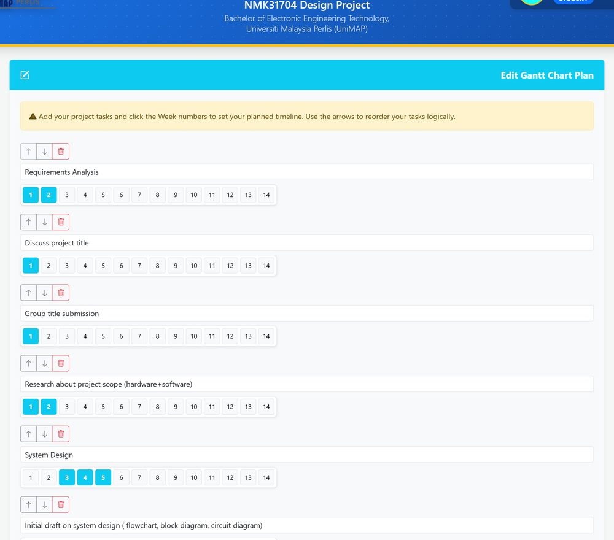
Pelajar merancang tugasan sebelum tarikh akhir perancangan; selepas itu rancangan dikunci.
AIPDP UniMAP 2026 · Pentaksiran Alternatif26
E3 · Minggu 1–14
e-Logbook mingguan: pentaksiran formatif
Kaedah pentaksiran
Bukti proses dikumpul setiap minggu: apa yang dibuat, isu yang dihadapi dan rancangan minggu berikutnya, bersama gambar kerja sebenar.
Bagaimana DPMS membantu
Borang e-logbook berstruktur, gambar dimuat naik terus ke Google Drive, dan status 14 minggu kelihatan kepada pelajar, penyelia dan penyelaras.
DPMS · Logbook Entry×
+
–□×
←→⟳
script.google.com · DPMS
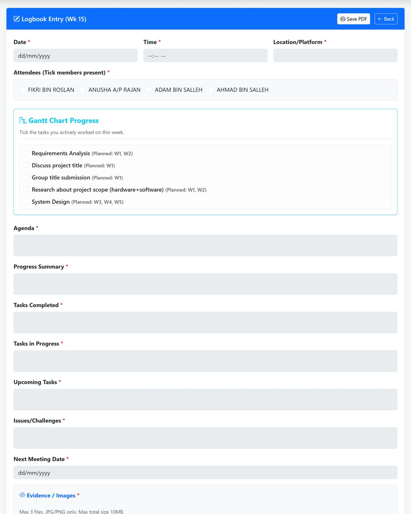
Borang logbook yang diisi kumpulan setiap minggu.
DPMS · Logbook Entry (Wk 7)×
+
–□×
←→⟳
script.google.com · DPMS
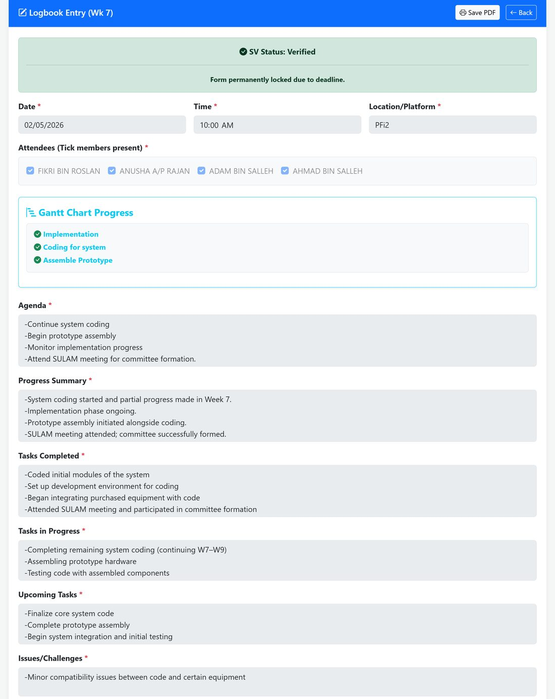
Logbook minggu 7 yang telah diisi dan disahkan penyelia.
1
Ahli yang hadir mesyuarat ditanda.
2
Kemajuan Gantt dikemas kini.
3
Agenda, kemajuan, isu, rancangan ditulis.
4
Gambar bukti kerja dimuat naik.
5
Penyelia mengesah & memberi komen.
Evidence / Images×
+
–□×
←→⟳
script.google.com · DPMS
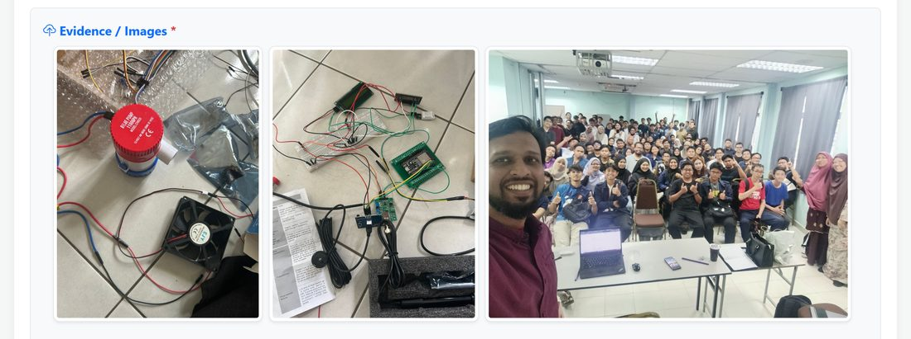
Gambar bukti kerja dalam logbook yang sama.
592logbook mingguan, 99.7% disahkan penyelia
Refleksi mingguan
Ruangan Isu / cabaran dan Tugasan seterusnya meminta kumpulan menilai kemajuan sendiri dan merancang minggu berikutnya setiap minggu.
AIPDP UniMAP 2026 · Pentaksiran Alternatif27
E3 · Minggu 1–14
Pengesahan & maklum balas penyelia setiap minggu
Kaedah pentaksiran
Setiap entri logbook mesti disemak penyelia sebelum dikira. Penyelia mengesahkan, atau memulangkan untuk pindaan, dengan komen bertulis supaya pelajar menambah baik minggu berikutnya.
Bagaimana DPMS membantu
Butang Sah / Pinda dan ruang komen dalam DPMS. Emel automatik dihantar kepada penyelia apabila logbook baharu dihantar, dan kepada pelajar apabila logbook disahkan atau perlu dipinda.
1
Pelajar hantar logbook & bukti.
2
Emel automatik kepada penyelia.
3
Penyelia semak: Sah atau Pinda + komen.
4
Emel automatik kepada pelajar.
5
Pelajar tambah baik minggu berikutnya.
Bukti sebenar: Kumpulan 42
DPMS · Logbook Entry (Wk 5)×
+
–□×
←→⟳
script.google.com · DPMS
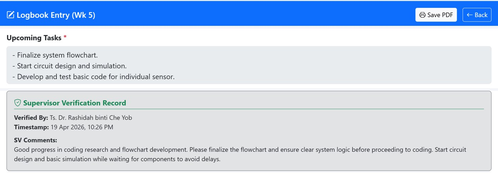
Minggu 5: penyelia meminta carta alir dimuktamadkan dan reka bentuk litar dimulakan sementara menunggu komponen.
▼ minggu berikutnya
DPMS · Logbook Entry (Wk 6)×
+
–□×
←→⟳
script.google.com · DPMS
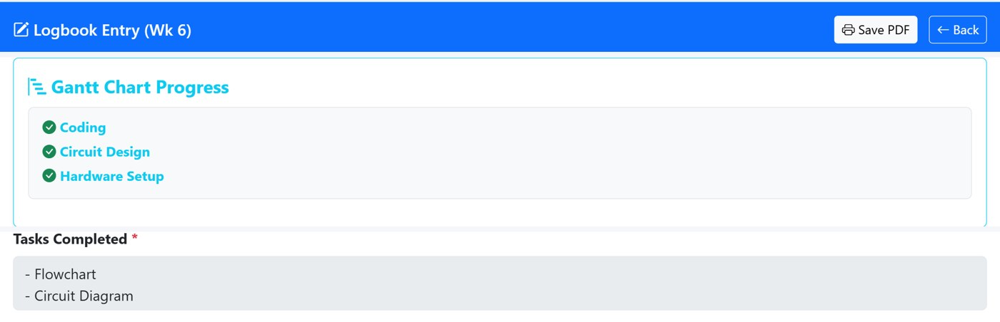
Minggu 6: carta alir dan rajah litar siap; tugasan Gantt Coding, Circuit Design dan Hardware Setup ditanda.
590/592logbook disahkan penyelia (99.7%)
2.1 harimedian masa pengesahan
134komen terperinci (10 patah perkataan atau lebih)
Sumber: Paparan DPMS sebenar dengan data Sem 2 2025/2026; nama pelajar ditukar, gambar bukti tidak dipaparkan.
AIPDP UniMAP 2026 · Pentaksiran Alternatif28
E3 · Minggu 1–14
Maklum balas yang mengubah kerja pelajar minggu berikutnya
Contoh sebenar daripada logbook Sem 2 2025/2026: komen penyelia pada satu minggu, dan apa yang kumpulan lakukan pada minggu berikutnya.
Kumpulan 42M5 → M6
Komen penyeliaGood progress in coding research and flowchart development. Please finalize the flowchart … Start circuit design and basic simulation while waiting for components to avoid delays.
Komen penyeliaMake sure each component you choose is supported with a simple reason, especially in terms of energy saving and cost. Double-check that all parts are compatible with each other.
▼
Logbook minggu berikutnya
Komponen diperoleh dan diperiksa; kumpulan beralih daripada perolehan kepada pembinaan prototaip mengikut rajah litar.
Kumpulan 42M12 → M13
Komen penyeliaContinue analyzing the test results and address sensor stability issues through calibration and repeated testing.
▼
Logbook minggu berikutnya
Isu kalibrasi penderia dikenal pasti dan diatasi; ujian akhir dalam pelbagai keadaan dijalankan.
134komen penyelia terperinci (10 patah perkataan atau lebih)
52kes komen terperinci yang diambil tindakan pada minggu berikutnya
2.1 harimedian masa maklum balas
Sumber: Logbook_System_DB, padanan kata kunci komen penyelia dengan entri minggu berikutnya; komen dipetik dalam bahasa asal. Nama pelajar tidak dipaparkan.
AIPDP UniMAP 2026 · Pentaksiran Alternatif29
E3 · Minggu 13
Penghantaran akhir: produk yang dinilai
Setiap kumpulan menghantar empat produk dalam satu halaman DPMS, yang kemudian dinilai oleh penyelia dan panel melalui eScoring.
Kaedah pentaksiran
Empat produk akhir dinilai sebagai bukti hasil pembelajaran: laporan teknikal, poster, brosur pemasaran dan video projek.
Bagaimana DPMS membantu
Satu halaman penghantaran dengan panduan penamaan fail dan papan status; fail terus tersedia kepada penilai dalam eScoring.
DPMS · Final Submission×
+
–□×
←→⟳
script.google.com · DPMS
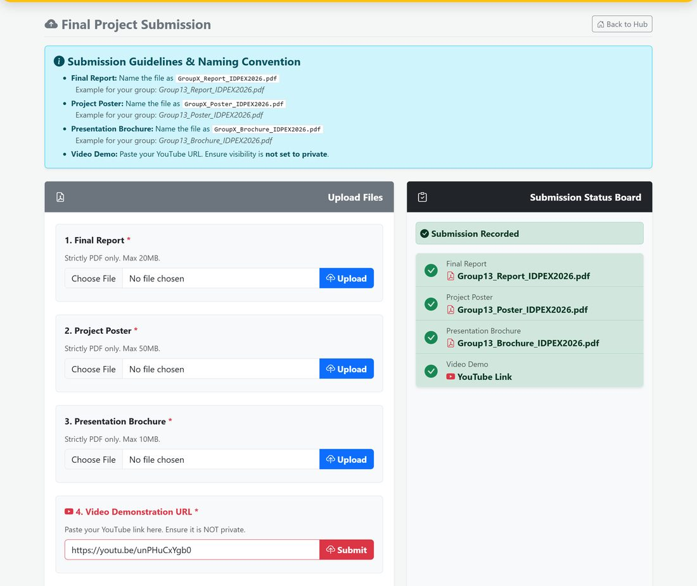
Halaman penghantaran akhir dengan panduan penamaan fail dan papan status.
43laporan teknikal (templat persidangan)
43poster pameran & brosur pemasaran
43video projek di YouTube
Produk
Dinilai oleh
Bukti untuk
Laporan teknikal
Penyelia, Panel 1, Panel 2
CO1 reka bentuk, CO2 pertimbangan, CO3 etika, CO6 pengurusan projek
Poster & prototaip
Panel 1, Panel 2
CO1–CO3, CO5 komunikasi (individu)
Brosur pemasaran
Panel 1, Panel 2
CO7 keusahawanan berfokuskan pengguna
Video projek
Rujukan penilai & penyebaran
Demonstrasi prototaip berfungsi
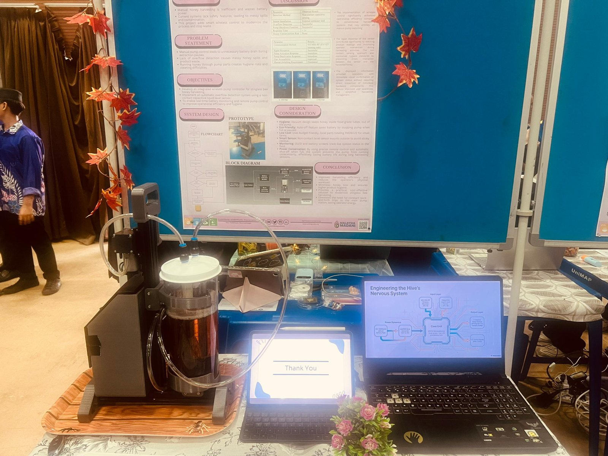
Prototaip berfungsi dengan antara muka pemantauan.
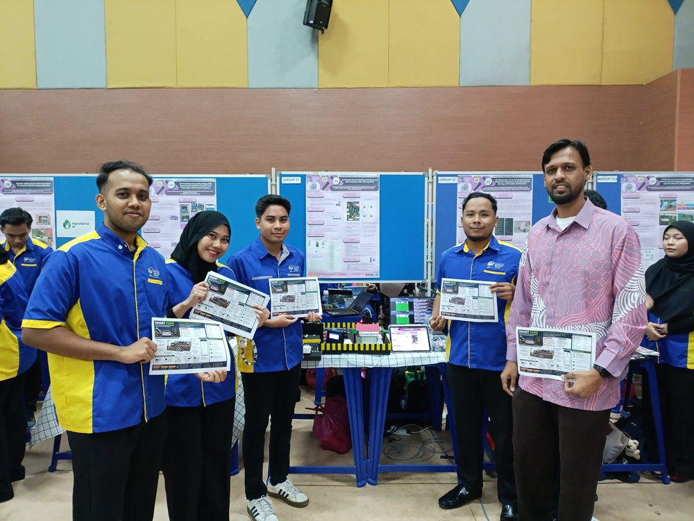
Poster dan prototaip di gerai pameran.
AIPDP UniMAP 2026 · Pentaksiran Alternatif30
E3 · Minggu 14
Tiga penilai, satu e-rubrik, di gerai pameran
Kaedah pentaksiran
Pembentangan di gerai dinilai oleh tiga penilai menggunakan e-rubrik yang sama, termasuk markah kualiti pembentangan individu.
Bagaimana DPMS membantu
e-Rubrik pada telefon atau tablet, daftar masuk di dewan, bahan kumpulan di skrin, dan borang dikunci selepas tempoh penilaian.
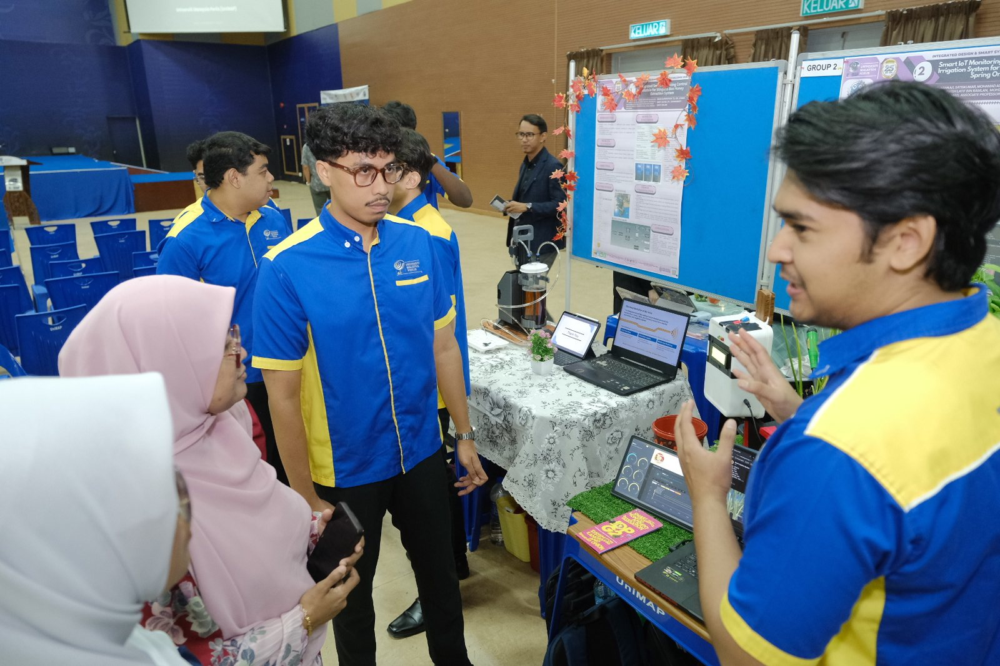
Pensyarah menyoal kumpulan tentang reka bentuk prototaip.Panel menilai kumpulan dan berbincang tentang prototaip di gerai.
Markah individu dibezakan
20% markah dinilai secara individu (pemerhatian penyelia, rakan sebaya, kualiti pembentangan). Dalam 21 daripada 43 kumpulan, beza markah individu antara ahli melebihi 2 markah daripada 15.
Pelajar dalam kumpulan yang sama tidak semestinya menerima markah akhir yang sama.
Setiap pelajar menilai setiap rakan sekumpulan (bukan diri sendiri) pada 7 kriteria, skala 1–5, secara sulit. Markah pelajar = purata markah daripada rakan (5% markah, CO4-PO8).
Kaedah pentaksiran
Setiap pelajar menilai sumbangan rakan sekumpulan pada 7 kriteria, supaya sumbangan individu dalam kerja berpasukan diiktiraf.
Bagaimana DPMS membantu
Borang dalam talian yang sulit; markah purata setiap pelajar dikira automatik dan dihantar ke eScoring.
Kualiti kerja teknikalKomitmen kepada projekKepimpinanTanggungjawabSumbanganKomunikasiSikap & personaliti
DPMS · Peer Review×
+
–□×
←→⟳
script.google.com · DPMS
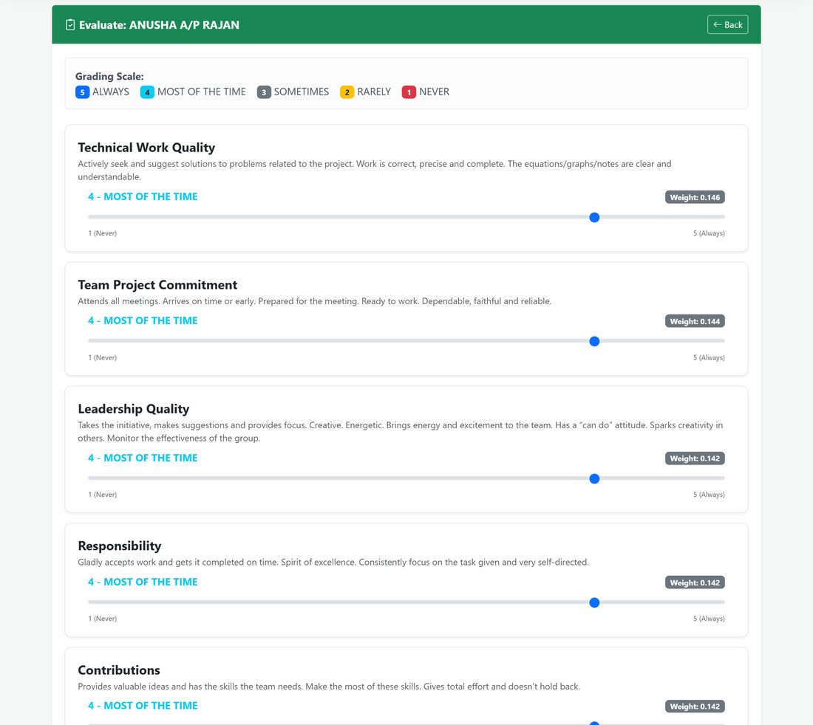
Borang penilaian rakan sebaya dalam DPMS: kriteria, skala dan ruang komen.
596/596penilaian rakan sebaya lengkap (100%)
9pelajar mendapat purata bawah 4/5 daripada rakan
7kumpulan dengan beza 1 mata atau lebih antara ahli
Rakan sebaya yang membezakan
Kebanyakan pelajar menilai rakan secara positif, tetapi penilaian ini tetap mengesan ahli yang kurang menyumbang, sesuatu yang tidak kelihatan dalam markah kumpulan.
AIPDP UniMAP 2026 · Pentaksiran Alternatif32
E3 · Selepas penilaian
Triangulasi dan semakan percanggahan
Kaedah pentaksiran
Markah daripada beberapa penilai dan sumber digabung (triangulasi), dan perbezaan besar antara penilai disemak sebelum markah dimuktamadkan.
Bagaimana DPMS membantu
Semakan percanggahan 15% menanda kumpulan secara automatik; markah akhir, gred dan analisis CO-PO dijana tanpa pengiraan manual.
eScoring · Audit×
+
–□×
←→⟳
script.google.com · eScoring
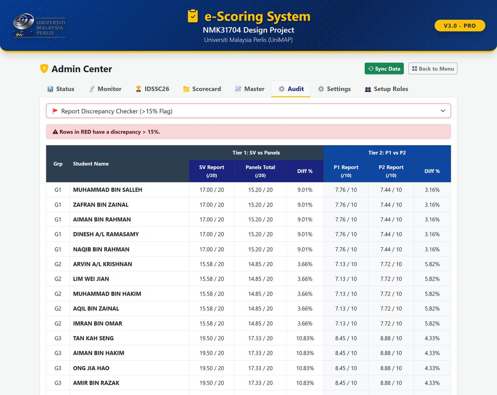
Report Discrepancy Checker: setiap kumpulan dengan beza markah melebihi 15% ditanda merah (penyelia lawan gabungan panel, Panel 1 lawan Panel 2).
Apa yang data tunjukkan
Kesahan: setiap CO ditaksir melalui lebih daripada satu bukti (kecuali CO5 & CO7), dan setiap kriteria dipetakan kepada CO yang ditaksir.
Konsistensi: purata Panel 1 dan Panel 2 hampir sama, laporan 7.89 lawan 8.03, pembentangan 7.80 lawan 7.92 (daripada 10). Kerana markah berkumpul dalam julat sempit, sistem menanda setiap percanggahan untuk semakan penyelaras.
Ketepatan: markah yang dikira automatik dapat dihasilkan semula tepat untuk 182/182 pelajar apabila disemak dengan rekod CO-PO rasmi.
eScoring · CO-PO Master Matrix×
+
–□×
←→⟳
script.google.com · eScoring
Matriks CO-PO setiap pelajar dijana terus daripada markah e-rubrik, sedia untuk CER dan audit akreditasi.
AIPDP UniMAP 2026 · Pentaksiran Alternatif33
E4 · Keaslian inovasi
Apa yang DPMS lakukan yang tidak dilakukan oleh LMS biasa
Sistem Pengurusan Pembelajaran (Learning Management System, LMS) menyimpan bahan dan tugasan, tetapi tidak direka untuk kekangan pentaksiran kursus projek berkumpulan berbilang program.
Keperluan pentaksiran
LMS biasa
DPMS
Pembentukan kumpulan
Tiada
Algoritma mengimbangi CGPA, jantina, bangsa, program
DPMS dibangunkan sendiri oleh pasukan penyelaras berdasarkan rubrik, pemberat dan CO kursus. Kriteria, minggu dan peranan disimpan sebagai data, jadi pentaksiran boleh disesuaikan tanpa mengubah kod.
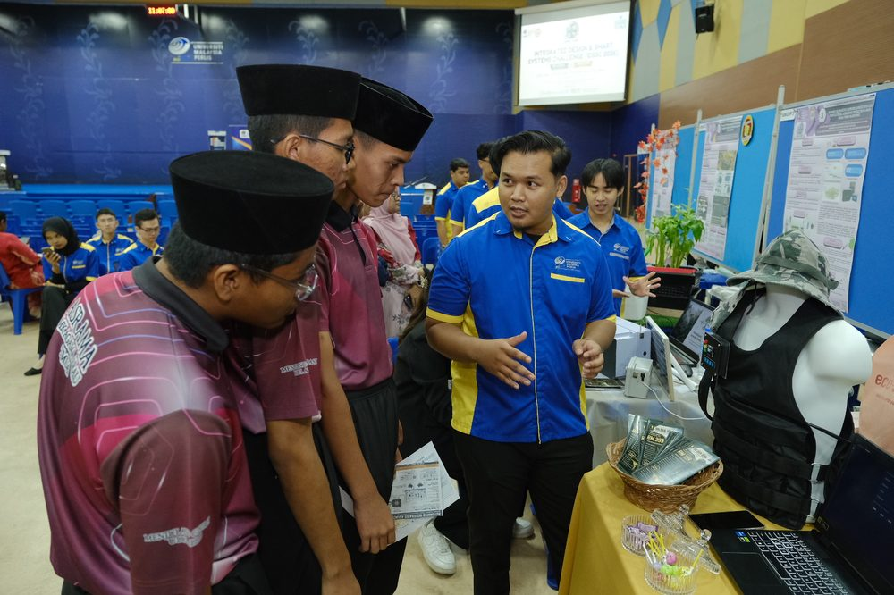
Penilai berbincang dengan kumpulan tentang prototaip mereka di gerai.
AIPDP UniMAP 2026 · Pentaksiran Alternatif34
E4 · Keaslian inovasi
Ekosistem digital yang menjadikan kaedah ini praktikal
Pendekatan pentaksiran ini memerlukan ribuan rekod setiap semester. DPMS menyokong setiap pihak supaya pentaksiran berbilang sumber dapat dilaksanakan untuk 182 pelajar.
DPMS · Penyelia×
+
–□×
←→⟳
script.google.com · DPMS
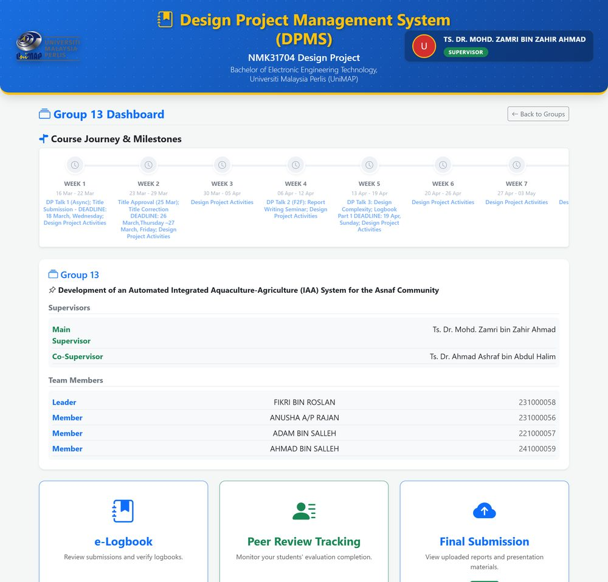
Hab penyelia: kumpulan seliaan, logbook untuk disahkan dan status setiap minggu.
eScoring · Group 21×
+
–□×
←→⟳
script.google.com · eScoring
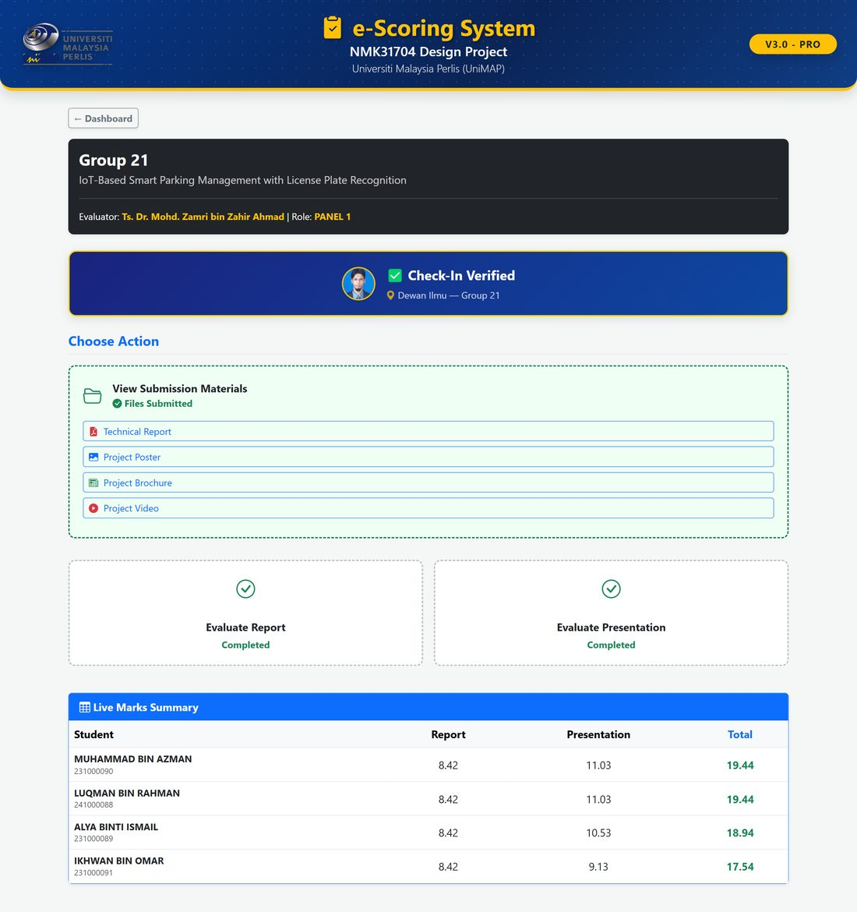
Hab penilai: daftar masuk di dewan, bahan kumpulan, borang penilaian.
Kos lesen RM0. Dibina di atas Google Workspace UniMAP (Sheets, Apps Script, Drive, Sites) dan alat Python percuma. Tiga komponen: alat pengumpulan, DPMS (logbook, Gantt, rakan sebaya, penghantaran) dan eScoring (e-rubrik, CO-PO).
AIPDP UniMAP 2026 · Pentaksiran Alternatif35
F. Keterlibatan pelajar20%
Pelajar terlibat dalam pentaksiran setiap minggu
592entri logbook (13.8 setiap kumpulan)
596tugasan Gantt dirancang pelajar
1,200gambar bukti kerja
182/182pelajar menilai rakan
596/596penilaian rakan sebaya lengkap
43/43kumpulan menghantar laporan, poster, brosur & video
Logbook dihantar setiap minggu (daripada 43 kumpulan)
Sekurang-kurangnya 40 daripada 43 kumpulan menghantar logbook setiap minggu sepanjang 14 minggu; 10 daripada 14 minggu mencatat 43/43.
DPMS · 14-Week Submissions×
+
–□×
←→⟳
script.google.com · DPMS
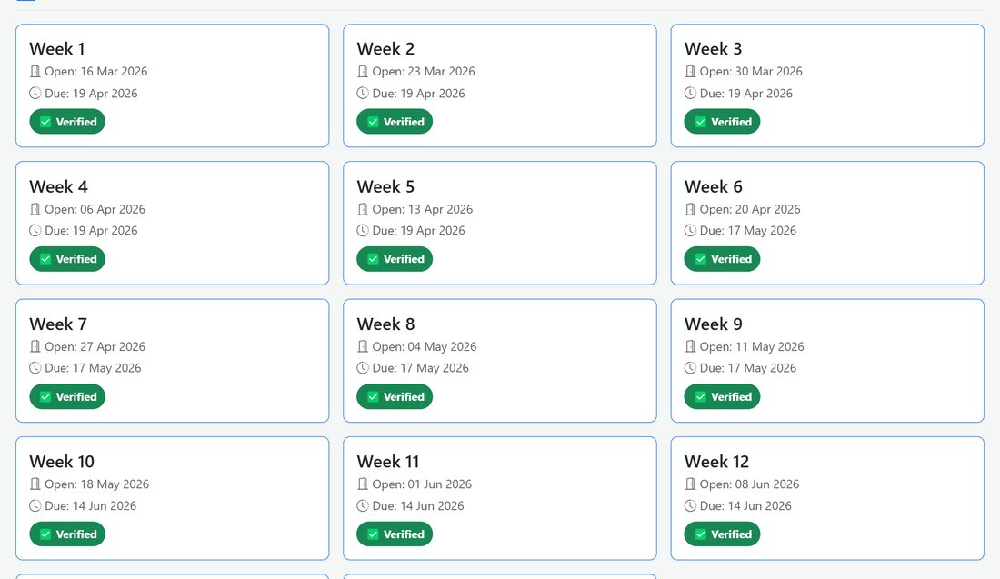
Paparan pelajar: status setiap minggu (Verified) dengan tarikh buka dan tarikh akhir.
AIPDP UniMAP 2026 · Pentaksiran Alternatif36
F. Keterlibatan pelajar20%
Pelajar sebagai penilai dan penerima maklum balas
Masa penyelia mengesahkan logbook (590 entri)
Median 2.1 hari. 80% disahkan dalam 7 hari. Dahulu maklum balas hanya pada 4 titik semakan.
Menghantar buktiSetiap kumpulan mendokumen kerja minggu itu dengan gambar dan kemajuan Gantt.
Menerima komenStatus dan komen penyelia kelihatan kepada kumpulan sebaik disahkan.
Menilai rakanSetiap pelajar menjadi penilai sumbangan rakan sepasukan.
MembentangSetiap ahli membentang dan menjawab soalan panel di gerai.
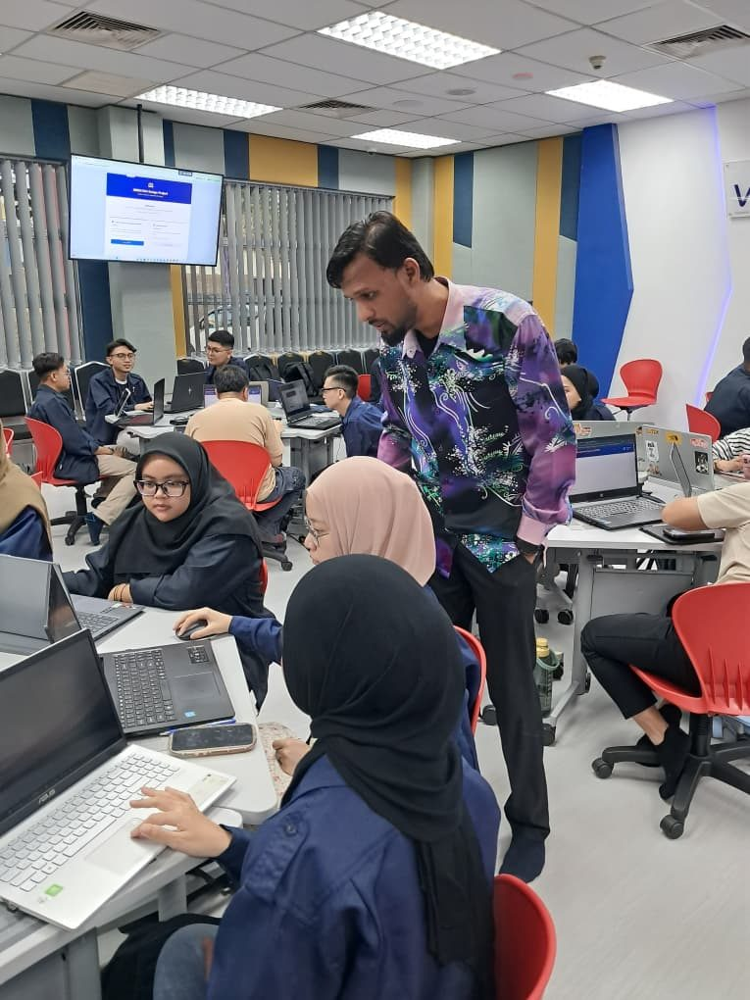
Taklimat kepada pelajar tentang cara pentaksiran dan penggunaan DPMS.
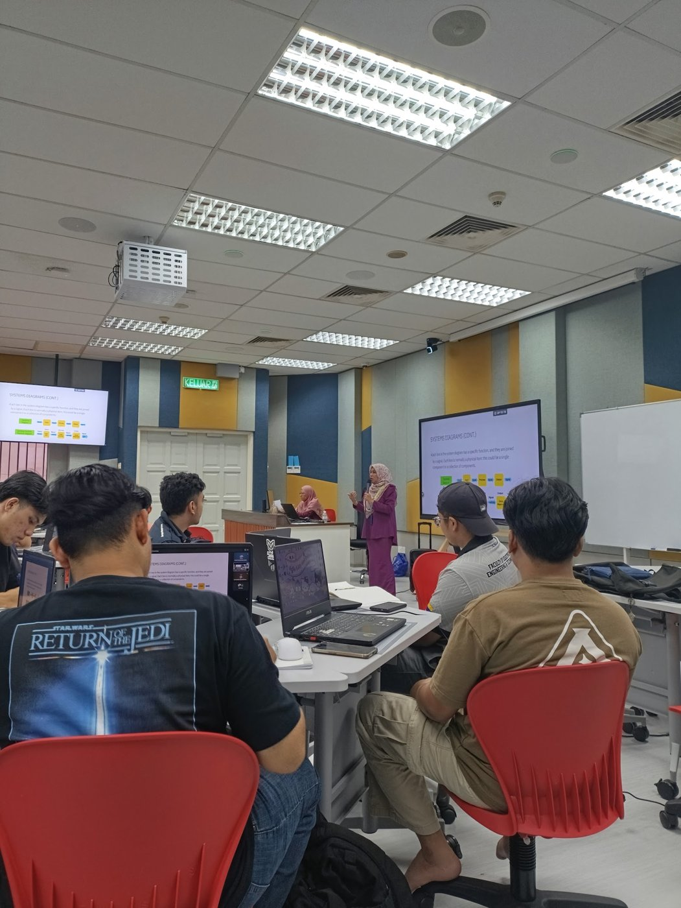
DP Talk 3 di bilik VIBE: pelajar dibimbing tentang kerumitan reka bentuk.
AIPDP UniMAP 2026 · Pentaksiran Alternatif37
F. Keterlibatan pelajar20%
Hari pembentangan: pelajar di hadapan panel
Pelajar membentang prototaip kepada panel.Panel menilai kumpulan di gerai.
Juri memberi maklum balas kepada kumpulan.Penilai bersama kumpulan di gerai.
86daftar masuk penilai di Dewan Ilmu
43projek dipamer & dinilai dalam satu hari
13:00borang penilaian dikunci automatik
AIPDP UniMAP 2026 · Pentaksiran Alternatif38
F. Keterlibatan pelajar20%
Pelajar mempamerkan hasil kerja mereka
Kumpulan bersama prototaip dan poster.Demonstrasi aplikasi pemantauan kepada pelawat.
Kumpulan bersama pensyarah di gerai dengan prototaip siap.Kumpulan bersama pensyarah dan pelawat di gerai.
Produk sebagai bukti CO
Laporan menunjukkan reka bentuk dan pertimbangan kejuruteraan (CO1–CO3, CO6), pembentangan dan prototaip menunjukkan komunikasi dan penyelesaian (CO1–CO3, CO5), dan brosur menunjukkan kemahiran keusahawanan berfokuskan pengguna (CO7).
Sumber: CER NMK31704 Semester 2 2024/2025 dan 2025/2026. Kedua-dua sesi: 182 pelajar, 3 program dan pecahan penilaian yang sama. CO7 (PO12) diperkenalkan pada 2025/2026.
AIPDP UniMAP 2026 · Pentaksiran Alternatif40
G. Impak & keberkesanan30%
Kenaikan terbesar tepat pada komponen pentaksiran yang diubah
Kaedah pentaksiran baharu (proses & rakan sebaya) Ditukar ke e-rubrik sahaja · kenaikan purata markah (mata %)
Tafsiran
Komponen yang diubah kaedahnya (logbook mingguan, Gantt, pemerhatian penyelia dan rakan sebaya) naik +6.2 hingga +10.6 mata. Komponen yang hanya dipindahkan ke e-rubrik naik +2.6 hingga +5.7.
Ini dua kohort berbeza, jadi kami tidak mendakwa kaedah ini satu-satunya punca. Namun corak kenaikan yang lebih besar pada CO6 dan CO4 selari dengan perubahan pentaksiran yang dilaksanakan.
Komponen
CO
2024/2025
2025/2026
Beza
Pengurusan projek (SV)
CO6
83.90%
94.50%
+10.6
Logbook
CO6
81.92%
91.50%
+9.6
Laporan pengurusan projek
CO6
81.41%
88.00%
+6.6
Pemerhatian SV
CO4
83.25%
89.60%
+6.3
Penilaian rakan sebaya
CO4
89.35%
95.60%
+6.2
Pembentangan CO2
CO2
76.99%
82.67%
+5.7
Laporan CO1
CO1
77.08%
82.00%
+4.9
Laporan CO2
CO2
80.80%
85.30%
+4.5
Pembentangan CO1
CO1
74.98%
77.62%
+2.6
AIPDP UniMAP 2026 · Pentaksiran Alternatif41
G. Impak & keberkesanan30%
Masa penyelaras dipulangkan kepada pengajaran
≈ 54–70 jamkerja pentadbiran penyelaras dijimatkan setiap semester (anggaran)
Masa yang dijimatkan digunakan untuk pembelajaran bermakna. Pada semester yang sama, kursus NMK31704 melaksanakan SULAM antarabangsa hibrid yang pertama bagi UniMAP, bersama Sekolah Tham Islam Suksa, Yala, Thailand (14 Jun 2026).
Sesi hibrid "Lensa Sains" disampaikan di Yala, Thailand, disertai pelajar FKTEN dari UniMAP.
Masa pentadbiran yang dijimatkan memberi ruang kepada pengalaman pembelajaran yang lebih bermakna.
AIPDP UniMAP 2026 · Pentaksiran Alternatif42
G. Impak & keberkesanan30%
SULAM: pembelajaran melalui khidmat masyarakat
SULAM dalam kursus
26 daripada 43 kumpulan memilih menyertai SULAM (Service-Learning Malaysia, University for Society), sama ada bersama kumpulan lain atau secara berkumpulan sendiri.
Program kemuncak ialah SULAM antarabangsa hibrid pertama UniMAP bersama sekolah di Yala, Thailand: pelajar FKTEN menyampaikan aktiviti sains secara hibrid dari UniMAP.
Inovasi SULAM hibrid ini turut memenangi Pingat Perak EDIC 2026.
Penyampaian di Yala, Thailand.
Pelajar FKTEN mengendalikan sesi dari UniMAP.Sesi hibrid "Lensa Sains" menghubungkan UniMAP dan Yala.
Mengurangkan beban pentadbiran memberi pasukan masa untuk pengalaman pembelajaran yang lebih bermakna kepada pelajar.
AIPDP UniMAP 2026 · Pentaksiran Alternatif43
G. Impak & keberkesanan30%
Suara pelajar dan pensyarah
8.5/10kebergunaan sistem
8.6/10melancarkan pengurusan & pentaksiran
73%tiada sebarang masalah
Survei pengguna selepas pelaksanaan (41 responden: pelajar dan pensyarah), Mei 2026.
“Logbook and we can see the feedback too.”Pelajar
“Easy for students to update progress and supervisors can monitor project progress.”Pelajar
“Approved student's minute meeting and trace the student progress.”Pensyarah
PelajarTahu apa yang dinilai, menerima komen mingguan, sumbangan individu diiktiraf.
Penyelia & panelBukti dan rubrik di satu tempat, menilai di gerai.
PenyelarasPemantauan 43 kumpulan secara langsung, CO-PO automatik.
FakultiBukti sedia untuk CER dan audit akreditasi.
Penilai bersama kumpulan pelajar di IDSSC 2026.
Survei persepsi pentaksiran (Nov 2026)Survei tanpa nama kepada pelajar Sem 2 2025/2026 tentang keautentikan tugasan, kejelasan rubrik, maklum balas mingguan, penilaian rakan sebaya dan pembelajaran. Dapatan akan dimasukkan di sini.
AIPDP UniMAP 2026 · Pentaksiran Alternatif44
G. Impak & keberkesanan30%
Penambahbaikan berterusan
Kerana setiap markah dan komen kini direkodkan, pasukan dapat melihat corak yang tidak kelihatan dengan kertas, dan menggunakannya untuk penambahbaikan.
Dapatan daripada data 2025/2026
Tindakan / perancangan
CO7 (keusahawanan) mempunyai pencapaian terendah, 74.2%
Fokus bimbingan pemasaran produk & brosur dalam DP Talk
Kedalaman komen penyelia berbeza antara penyelia
Corak maklum balas kini kelihatan kepada penyelaras untuk moderasi dan taklimat penyelia
Markah penilai berkumpul dalam julat sempit
Semakan percanggahan 15% diteruskan; deskriptor rubrik dipaparkan semasa menilai
Komen dalam penilaian rakan sebaya adalah pilihan (133/596)
Menggalakkan komen bertulis supaya rakan sebaya turut memberi maklum balas
Maklum balas pengguna → versi 2027
Maklum balas pengguna
Tindakan
Sukar digunakan pada telefon
Reka bentuk mudah alih sepenuhnya
Kadang-kadang gagal log masuk
Log masuk lebih stabil dengan akaun UniMAP
Draf logbook hilang
Simpan draf automatik
Ingin semakan tajuk projek lebih awal
Modul pengajuan & semakan tajuk
DP Talk 4: bimbingan pembentangan dan pemasaran produk.Sesi DP Talk di bilik VIBE.
AIPDP UniMAP 2026 · Pentaksiran Alternatif45
G. Impak & keberkesanan30%
Pengiktirafan
Pingat Emas · EDIC 2026 (IQ-SITE 2026) Education Innovation Challenge, International Conference on Quality, Sustainability & Innovation in Science and Technology Education, kategori Transformative Teaching, 1 September 2026. Dianugerahkan kepada keempat-empat penyelaras.
Pingat Perak · EDIC 2026 (IQ-SITE 2026) SULAM Hibrid, oleh pasukan penyelaras yang sama.
Diterbitkan & dibentangkan
Kertas inovasi dibentangkan di IQ-SITE 2026 (Virtual Innovation), lengkap dengan video demonstrasi.
Pendekatan ini juga dibentangkan kepada pengurusan FKTEN pada Oktober 2026.
AIPDP UniMAP 2026 · Pentaksiran Alternatif46
G. Impak & keberkesanan30%
Penyebarluasan & kelestarian
Boleh disalin oleh mana-mana kursus projek. Model pentaksiran (proses, rakan sebaya, produk; tiga penilai; e-rubrik berdeskriptor) boleh digunakan oleh kursus projek lain. Sistem berjalan di atas Google Workspace UniMAP tanpa kos lesen; kriteria rubrik, pemberat, minggu dan peranan disimpan sebagai data.
Perluasan ke program lain
Program Sarjana Muda Teknologi Elektronik Automasi Industri dengan Kepujian telah menyatakan minat untuk melaksanakan pendekatan dan sistem ini dalam kursus Pembelajaran Berasaskan Kerja (WBL) mereka.
Dekan FKTEN, Prof. Madya Ir. Ts. Dr. Muhammad Mahyiddin bin Ramli (mulai Oktober 2026), menyokong perluasan ini.
Sokongan pengurusan
Dilaksanakan pada Semester 2 2025/2026 di bawah Dekan ketika itu, Prof. Madya Ir. Dr. Razaidi bin Hussin, dan diteruskan dengan sokongan Dekan baharu.
IDSSC 202643 projek dinilai secara langsung di Dewan Ilmu; Dekan FKTEN melihat demonstrasi.
Pingat Emas EDIC 2026 (IQ-SITE)Kertas dan video inovasi dibentangkan.
Taklimat Dekan & minat program WBLPengurusan FKTEN menyokong perluasan ke program lain.
Versi bersepadu (perancangan)Satu sistem dengan modul baharu. Bukan sebahagian daripada bukti e-book ini.
AIPDP UniMAP 2026 · Pentaksiran Alternatif47
Galeri sorotan
IDSSC 2026: hari pentaksiran sumatif
43 projek dipamer dan dinilai di Dewan Ilmu UniMAP, 2 Julai 2026.
Kumpulan pemenang anugerah IDSSC 2026, dinilai sepenuhnya melalui e-rubrik tiga penilai.
AIPDP UniMAP 2026 · Pentaksiran Alternatif48
Galeri sorotan
Pelajar & prototaip mereka
Perbincangan panel selepas menilai kumpulan pelajar di IDSSC 2026.
Setiap prototaip ialah produk sebenar yang dinilai: reka bentuk, fungsi, pembentangan dan pemasaran.
AIPDP UniMAP 2026 · Pentaksiran Alternatif49
Terima kasih
Pentaksiran autentik dan berterusan, dinilai daripada pelbagai sumber dan dijajarkan kepada hasil pembelajaran, untuk setiap pelajar Projek Rekabentuk.
Ts. Dr. Mohd. Zamri bin Zahir Ahmadzamrizahir@unimap.edu.my · 04-988 5509 / 5515Fakulti Kejuruteraan & Teknologi Elektronik, Universiti Malaysia Perlis
100%
Cubit atau Ctrl + gulung tetikus untuk zum · seret untuk alih · ketik dua kali untuk zum dekat